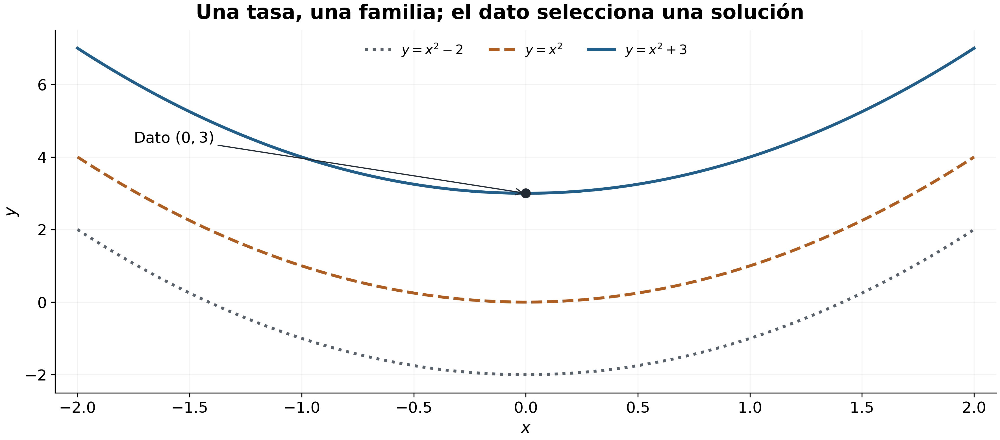
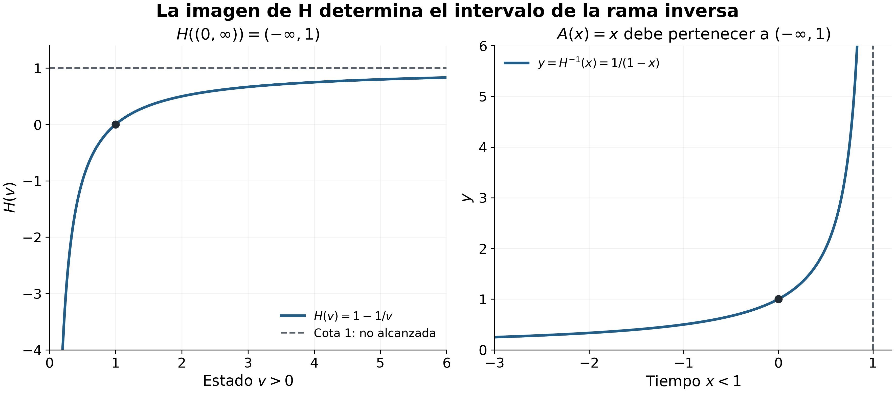
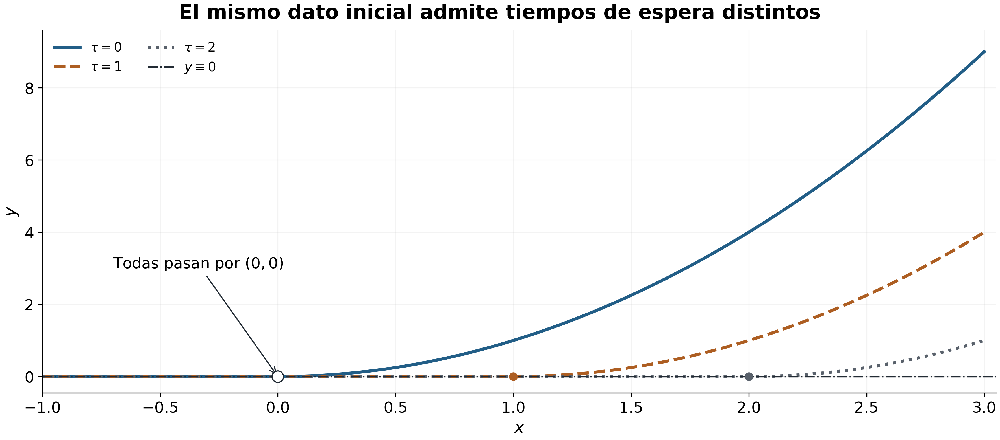
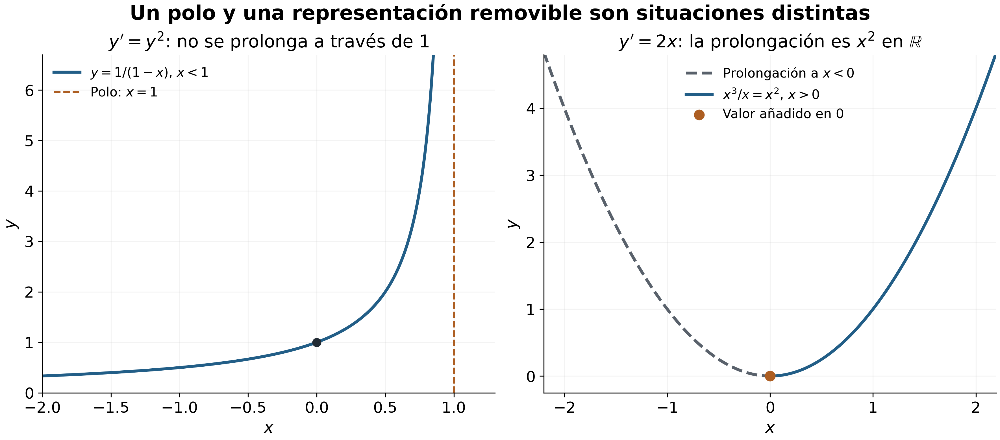
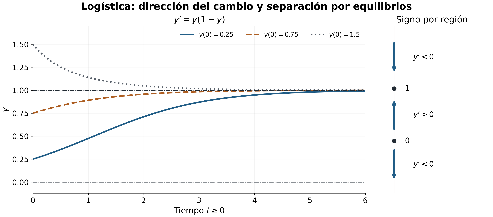

Ecuaciones diferenciales elementales y síntesis Newton–Leibniz
20 Ecuaciones diferenciales elementales y síntesis Newton–Leibniz
← Capítulo 19 · Índice del Tomo I
El cálculo diferencial permite obtener una tasa de cambio cuando conocemos la función que describe un estado. El cálculo integral recorre la dirección inversa: desde una tasa conocida y un valor de referencia reconstruye ese estado. El teorema fundamental del cálculo ha dado una forma precisa a esta relación. Ahora aparece una dificultad adicional: la tasa puede depender del propio estado que buscamos. Una ley como \(y'=y\) no entrega de antemano una función conocida que podamos integrar; relaciona la incógnita con su derivada.
En este capítulo resolveremos algunas clases de ecuaciones de este tipo con las herramientas ya construidas. En cada caso distinguiremos la obtención de una fórmula, la comprobación de que define una solución y la demostración de que no quedan otras soluciones bajo las hipótesis declaradas. Esa distinción nos permitirá reconocer tanto la eficacia del cálculo como sus fronteras: un procedimiento que resuelve una clase concreta no constituye por sí solo una teoría general de existencia y unicidad.
20.1 Solución sobre un intervalo y dato inicial
La incógnita es una función
Consideremos primero la relación \(y'=2x\). Si sustituimos \(y(x)=x^2\), la derivada coincide con el miembro derecho para todo \(x\in\mathbb R\). Lo mismo sucede con \(y(x)=x^2+3\) y con \(y(x)=x^2-5\): la derivación elimina una constante añadida. Por tanto, conocer esta tasa no determina todavía una única función.
La notación \(y'\) abrevia la derivada de una función que debe buscarse. En una ecuación diferencial ordinaria, la incógnita depende de una sola variable y la ecuación relaciona sus valores con alguna de sus derivadas. El orden es el de la derivada más alta que aparece; aquí estudiaremos principalmente ecuaciones de primer orden escritas como \(y'=F(x,y)\). Aunque la expresión \(F\) reciba dos argumentos, la función incógnita \(y\) sigue dependiendo únicamente de \(x\): al sustituirla obtenemos \(F(x,y(x))\).
Una fórmula candidata no puede verificarse sin precisar dónde está definida. La ecuación \(y'=1/y\), por ejemplo, exige \(y(x)\ne0\) en todos los puntos del intervalo de solución. No tendría sentido sustituir una función que se anula allí y conservar como si nada una expresión cuyo denominador es cero. El dominio es parte del problema, no una restricción que se añade después de calcular.
Definición 20.1 Definición (solución de una ecuación diferencial de primer orden). Sean \(D\subseteq\mathbb R^2\) y \(F\colon D\to\mathbb R\). Una solución de la ecuación
\[ y'=F(x,y) \]
sobre un intervalo abierto no vacío \(I\subseteq\mathbb R\) es una función \(y\colon I\to\mathbb R\) diferenciable en todo \(I\) que satisface, para cada \(x\in I\), las dos condiciones
\[ (x,y(x))\in D \qquad\text{y}\qquad y'(x)=F(x,y(x)). \]
La primera condición hace admisible la sustitución; la segunda afirma que la ecuación se cumple. Ambas se exigen en todos los puntos de \(I\). Comprobar una igualdad en un punto, o incluso en varios puntos escogidos, no equivale a verificar una solución sobre el intervalo.
No hemos supuesto que \(F\) sea continua ni afirmado que toda ecuación así escrita posea una solución. La definición establece qué significa ser solución. Los resultados de existencia y unicidad necesitarán sus propias hipótesis y demostraciones. Tampoco se exige que \(D\) sea un rectángulo: basta que contenga cada par \((x,y(x))\) que la sustitución utiliza.
En este capítulo trabajaremos con intervalos abiertos, que pueden ser acotados, semirrectas o toda \(\mathbb R\). Así la derivada en cada punto de la solución es bilateral. Un extremo finito que no pertenece al intervalo no adquiere un valor por aparecer en una fórmula; para incorporarlo y continuar más allá habrá que justificar una prolongación, cuestión que estudiaremos posteriormente.
El valor que fija una trayectoria
Volvamos a \(y'=2x\). Si, además de la tasa, conocemos \(y(0)=3\), la función \(x^2+3\) cumple las dos exigencias, mientras que \(x^2\) y \(x^2-5\) ya no cumplen el valor prescrito. Este dato no altera la ecuación: selecciona, entre sus soluciones, aquellas que pasan por un punto determinado.
Definición 20.2 Definición (problema de valor inicial). Sean \(F\colon D\to\mathbb R\) y \((x_0,y_0)\in D\). El problema de valor inicial
\[ y'=F(x,y), \qquad y(x_0)=y_0 \]
consiste en encontrar una solución de la ecuación sobre un intervalo abierto \(I\) que contenga \(x_0\) y cuyo valor en ese punto sea \(y_0\).
Cuando se fija de antemano el intervalo \(I\), la búsqueda se realiza sobre ese intervalo. Si no se fija, también debemos indicar en qué intervalo hemos construido la solución. La palabra «inicial» procede de problemas donde la variable representa el tiempo, pero matemáticamente \(x_0\) es un punto de referencia y no tiene que ser un extremo izquierdo. Una solución puede estudiarse a ambos lados de él.
La condición \((x_0,y_0)\in D\) es necesaria para que el dato sea admisible. No garantiza, por sí sola, que exista una solución que pase por ese punto ni que sea única. Por ahora separamos tres preguntas: si hay alguna solución, cuántas cumplen el dato y sobre qué intervalos pueden definirse. El siguiente ejemplo permite responderlas directamente en un caso elemental.
Ejemplo 20.1 Ejemplo (una familia completa y el dato que elige su constante). Sea \(I\) un intervalo abierto no vacío y consideremos
\[ y'=2x. \]
El miembro derecho está definido para todos los pares \((x,y)\in\mathbb R^2\). Para cada \(C\in\mathbb R\), la función
\[ y_C\colon I\to\mathbb R, \qquad y_C(x)=x^2+C \]
es diferenciable y satisface \(y_C'(x)=2x\) en todo \(I\). Hemos verificado una familia de soluciones; todavía debemos comprobar que la familia las contiene a todas.
Sea \(y\) una solución cualquiera sobre \(I\) y fijemos \(x_0\in I\). La diferencia \(h(x)=y(x)-x^2\) es diferenciable y tiene derivada nula en \(I\). Para cada \(x\in I\) distinto de \(x_0\), el segmento cerrado cuyos extremos son \(x\) y \(x_0\) está contenido en \(I\). En ese segmento \(h\) es continua, y en su interior es diferenciable con derivada cero. Por Proposición 9.2, es constante allí; en particular, \(h(x)=h(x_0)\). La misma igualdad vale cuando \(x=x_0\), de modo que
\[ y(x)=x^2+C \qquad(x\in I), \qquad C=y(x_0)-x_0^2. \]
Así queda probada la exhaustividad: toda solución sobre \(I\) pertenece a la familia encontrada. Si exigimos además \(y(x_0)=y_0\), la constante queda determinada por \(C=y_0-x_0^2\). El problema tiene, sobre cualquier intervalo abierto \(I\) que contenga \(x_0\), la única solución
\[ \boxed{y(x)=x^2+y_0-x_0^2.} \]
En particular, para \(x_0=0\) y \(y_0=3\), obtenemos \(y(x)=x^2+3\). La fórmula define también una solución sobre toda \(\mathbb R\), porque tanto ella como la ecuación están definidas allí.
Control del dominio. La restricción de \(x^2+3\) a \((0,\infty)\) sigue resolviendo la ecuación en ese intervalo. Sin embargo, esa función restringida no resuelve el problema con dato \(y(0)=3\), pues \(0\) no pertenece a su dominio. La extensión a \(\mathbb R\) sí lo resuelve. La coincidencia de las fórmulas no vuelve idénticas dos funciones con dominios distintos.

En Figura 21.1 se distingue la familia completa del miembro seleccionado por el dato. El argumento de derivada nula, y no la inspección del dibujo, prueba la exhaustividad.
El ejemplo contiene dos argumentos con trabajos diferentes. Derivar \(x^2+C\) demuestra que cada función propuesta es solución. Examinar una solución arbitraria \(y\) y probar que \(y-x^2\) es constante demuestra que la familia es completa. Finalmente, evaluar en \(x_0\) selecciona la constante y acredita la unicidad para ese dato sobre un intervalo fijado. Ninguno de estos pasos debe confundirse con los demás.
Verificar antes de generalizar
La función \(z(x)=x^2+x+3\), definida en toda \(\mathbb R\), cumple el mismo dato \(z(0)=3\), pero no la ecuación: \(z'(x)=2x+1\). Pasar por el punto prescrito no basta. En cambio, \(w(x)=x^2\) cumple la ecuación en toda la recta, pero falla el dato \(w(0)=3\). Ser solución de la ecuación y ser solución del problema de valor inicial son afirmaciones distintas.
La definición tampoco obliga a que una solución tenga segunda derivada o derivadas de todos los órdenes. Solo exige la diferenciabilidad necesaria para la ecuación de primer orden considerada. Si más adelante una ecuación y sus coeficientes permiten deducir regularidad adicional, habrá que demostrarla.
Para verificar una propuesta, el recorrido es ya concreto: especificar el intervalo, comprobar que todos los pares \((x,y(x))\) pertenecen al dominio de la ecuación, derivar y sustituir en cada punto, y evaluar el dato inicial cuando exista. Si el objetivo es encontrar todas las soluciones, falta además un argumento de exhaustividad. En la sección siguiente veremos cómo el teorema fundamental del cálculo organiza precisamente esta reconstrucción cuando la tasa depende solo de la variable independiente.
20.2 Reconstruir una función desde una tasa conocida
La ecuación \(y'=2x\) de la sección anterior se resolvió porque reconocimos una función cuya derivada era \(2x\). Pero esa identificación no es el fundamento de la existencia de una solución. Si una tasa \(g\) es continua, el teorema fundamental del cálculo permite construir una primitiva mediante una integral, aunque no sepamos escribirla con las funciones elementales conocidas. El dato inicial fija después el valor de esa primitiva en el punto de referencia.
La construcción natural es acumular la tasa desde \(x_0\) hasta \(x\) y añadir el valor \(y_0\). La integral orientada conserva el mismo significado a ambos lados de \(x_0\): cuando \(x<x_0\), restamos la acumulación desde \(x\) hasta \(x_0\). No necesitamos una integral sobre todo el intervalo de solución, que podría ser no acotado; cada evaluación utiliza únicamente un segmento compacto.
Teorema 20.1 Teorema (reconstrucción desde una tasa continua y un dato inicial). Sea \(I\subseteq\mathbb R\) un intervalo abierto no vacío, sea \(g\colon I\to\mathbb R\) continua y sean \(x_0\in I\) y \(y_0\in\mathbb R\). Entonces el problema
\[ y'(x)=g(x)\quad(x\in I), \qquad y(x_0)=y_0 \]
tiene una única solución sobre \(I\), dada por
\[ \boxed{ y(x)=y_0+\int_{x_0}^x g(t)\,dt \qquad(x\in I). } \]
La solución pertenece a \(C^1(I)\).
Idea de la prueba. Las dos direcciones del teorema fundamental realizan trabajos distintos. Derivar la acumulación construida demuestra que tenemos una solución. Integrar la derivada de una solución cualquiera demuestra que necesariamente coincide con esa construcción. Conviene mantener separados ambos argumentos para no confundir una fórmula propuesta con una descripción exhaustiva.
Demostración. Para cada \(x\in I\), el segmento cerrado cuyos extremos son \(x_0\) y \(x\) está contenido en \(I\). La continuidad de \(g\) implica su integrabilidad en ese segmento; por tanto, la integral orientada de la fórmula está bien definida y es finita. Para \(x=x_0\) es cero, de modo que \(y(x_0)=y_0\).
Fijemos ahora \(c\in I\). Como \(I\) es abierto, podemos elegir \(a,b\in I\) tales que \(a<\min\{c,x_0\}\) y \(\max\{c,x_0\}<b\). En \([a,b]\), \(g\) es continua. Aplicamos Teorema 16.4 con punto base \(p=x_0\) y extremo variable \(\phi(x)=x\), restringido a \([a,b]\). La identidad es diferenciable en \(c\), y el resultado da
\[ \left.\frac{d}{dx}\int_{x_0}^x g(t)\,dt\right|_{x=c} =g(c). \]
La constante \(y_0\) tiene derivada cero. Así \(y'(c)=g(c)\); como \(c\) era arbitrario, la fórmula define una solución en todo \(I\). Su derivada es continua porque coincide con \(g\), luego \(y\in C^1(I)\).
Para demostrar unicidad, sea \(z\) cualquier solución del mismo problema sobre \(I\). Si \(x>x_0\), la función \(z\) es continua en \([x_0,x]\) y diferenciable en su interior, y allí \(z'=g\). Newton–Leibniz (Teorema 16.3) proporciona
\[ z(x)-z(x_0)=\int_{x_0}^x g(t)\,dt. \]
Si \(x<x_0\), aplicamos ese mismo teorema en \([x,x_0]\) y cambiamos la orientación:
\[ z(x_0)-z(x)=\int_x^{x_0}g(t)\,dt, \qquad z(x)-z(x_0)=\int_{x_0}^x g(t)\,dt. \]
Para \(x=x_0\), la última identidad también vale, con ambos miembros iguales a cero. Como \(z(x_0)=y_0\), en todos los casos obtenemos
\[ z(x)=y_0+\int_{x_0}^x g(t)\,dt=y(x). \]
Toda solución coincide con la construida, lo que demuestra la unicidad. \(\square\)
El argumento acredita la solución sobre todo el intervalo \(I\) declarado. No requiere que \(g\) esté acotada en todo \(I\): basta su continuidad y, con ella, la integrabilidad sobre cada segmento compacto utilizado. Tampoco hay aquí un límite en un extremo infinito ni una integral impropia. Si cambiamos el punto de referencia a \(x_1\in I\) y usamos el valor ya obtenido \(y(x_1)\), la aditividad de las integrales orientadas devuelve la misma función:
\[ y(x_1)+\int_{x_1}^x g(t)\,dt = y_0+\int_{x_0}^x g(t)\,dt. \]
El punto base organiza la descripción de la solución; no cambia la trayectoria cuando el dato se transforma de manera compatible.
Ejemplo 20.2 Ejemplo (una solución definida por una integral). Consideremos el problema
\[ y'(x)=e^{-x^2}, \qquad y(0)=2, \qquad x\in\mathbb R. \]
La función \(g(x)=e^{-x^2}\) es continua en toda \(\mathbb R\), pues es la composición de un polinomio con la exponencial ya construida. Por Teorema 21.1, la única solución sobre toda la recta es
\[ \boxed{ y(x)=2+\int_0^x e^{-t^2}\,dt. } \]
La integral define un número para cada \(x\) real y una función diferenciable de \(x\). No necesitamos encontrar una expresión adicional para tener una solución exacta. Este ejemplo no demuestra que el integrando carezca de primitiva elemental; simplemente muestra que la construcción y la verificación no dependen de disponer de tal expresión.
Podemos obtener información sobre la solución sin evaluar la integral. Si \(x>0\), entonces \(e^{-x^2}\le e^{-t^2}\le1\) para \(0\le t\le x\). Por comparación,
\[ 2+xe^{-x^2}\le y(x)\le2+x. \]
Si \(x<0\), en el segmento \([x,0]\) tenemos las mismas cotas \(e^{-x^2}\le e^{-t^2}\le1\). Como la integral desde \(0\) hasta \(x\) es la negativa de la integral desde \(x\) hasta \(0\), obtenemos
\[ 2+x\le y(x)\le2+xe^{-x^2}. \]
En particular, \(y(x)>2\) cuando \(x>0\) y \(y(x)<2\) cuando \(x<0\), porque el integrando es positivo en cada segmento no degenerado. La fórmula proporciona así existencia, valor inicial y cotas, sin reducir el problema a una búsqueda de fórmulas conocidas.
Cuando la tasa es independiente del estado, esta sección resuelve el problema mediante una acumulación de una función ya dada. Para una ecuación como \(y'=y\), escribir \(y(x)=y_0+\int_{x_0}^x y(t)\,dt\) no produce de inmediato una función conocida: la incógnita aparece también dentro de la integral. La siguiente sección utilizará la exponencial para construir y caracterizar las soluciones cuando la tasa es proporcional al estado.
20.3 Cuando la tasa es proporcional al estado
En \(y'=a(x)y\), el coeficiente \(a\) es conocido, pero la tasa completa no lo es: depende del estado \(y\) que buscamos. Integrar el miembro derecho directamente dejaría la incógnita dentro de la integral. La exponencial ofrece una salida porque su derivada reproduce la propia función. Si construimos una primitiva \(A\) de \(a\), la regla de la cadena da \((e^A)'=a e^A\) y sugiere buscar soluciones que sean múltiplos de \(e^A\).
Podríamos intentar dividir la ecuación por \(y\) y reconocer una derivada logarítmica. Ese paso solo sería admisible donde \(y\) no se anula y dejaría fuera, desde el comienzo, la solución \(y\equiv0\). Para construir todas las soluciones utilizaremos otra transformación: multiplicar por una exponencial que nunca se anula.
Teorema 20.2 Teorema (tasa proporcional con coeficiente continuo). Sea \(I\subseteq\mathbb R\) un intervalo abierto no vacío, sea \(a\colon I\to\mathbb R\) continua y sean \(x_0\in I\) y \(y_0\in\mathbb R\). Definamos
\[ A(x)=\int_{x_0}^x a(t)\,dt \qquad(x\in I). \]
Entonces el problema
\[ y'(x)=a(x)y(x)\quad(x\in I), \qquad y(x_0)=y_0 \]
tiene una única solución sobre \(I\), dada por
\[ \boxed{y(x)=y_0e^{A(x)}.} \]
La solución pertenece a \(C^1(I)\). Si \(y_0=0\), es idénticamente nula; si \(y_0\ne0\), no se anula en ningún punto de \(I\) y conserva el signo de \(y_0\).
Idea de la prueba. La función \(e^A\) produce el término \(a y\) al derivar. Para demostrar que ninguna otra solución escapa a la fórmula, buscamos una cantidad constante: el producto \(y e^{-A}\). La derivada del segundo factor cancela exactamente la contribución de \(y'\).
Demostración. El teorema Teorema 21.1, aplicado a la tasa \(a\) y al dato cero, muestra que \(A\) está bien definida en \(I\), que \(A(x_0)=0\) y que \(A'=a\). Por la derivada de la exponencial (Teorema 17.3) y la regla de la cadena, la función propuesta satisface
\[ y'(x)=y_0e^{A(x)}A'(x)=a(x)y(x). \]
Además, \(y(x_0)=y_0e^0=y_0\). Hemos construido y verificado una solución. Su derivada es continua porque es el producto de las funciones continuas \(a\) e \(y\).
Sea ahora \(z\) una solución cualquiera del mismo problema. Definamos \(h(x)=z(x)e^{-A(x)}\). Por las reglas de producto y cadena,
\[ h'(x) =e^{-A(x)}z'(x)-z(x)e^{-A(x)}a(x) =e^{-A(x)}\bigl(z'(x)-a(x)z(x)\bigr) =0 \]
para todo \(x\in I\). Como en la sección inicial, aplicamos Proposición 9.2 en cada segmento cerrado con extremos \(x_0\) y \(x\) contenido en \(I\). Concluimos que \(h(x)=h(x_0)=y_0\). Multiplicar por \(e^{A(x)}\) da
\[ z(x)=y_0e^{A(x)} \qquad(x\in I). \]
Esto demuestra exhaustividad y unicidad. Finalmente, \(e^{A(x)}>0\) en todo \(I\): el producto es nulo en todos los puntos si \(y_0=0\), y tiene en todos ellos el signo de \(y_0\) en caso contrario. \(\square\)
La conservación del signo es una conclusión de la fórmula demostrada, no una hipótesis que hayamos impuesto para dividir por la solución. En particular, una solución que toma el valor cero en algún punto es idénticamente nula en todo su intervalo: basta usar ese punto como referencia en el teorema. Para esta ecuación, una trayectoria no nula no puede atravesar el estado cero.
También podemos describir todas las soluciones sin prescribir un dato: fijado \(x_0\in I\), cada solución tiene la forma \(y(x)=C e^{A(x)}\), con \(C=y(x_0)\), y todo \(C\in\mathbb R\) produce una solución. La continuidad de \(a\) permite construir \(A\) sobre cada segmento compacto; no se exige que \(a\) esté acotada en todo \(I\).
Coeficiente constante: crecimiento, decaimiento y signo
Corolario 20.1 Corolario (tasa proporcional constante). Sean \(k\in\mathbb R\), \(x_0\in\mathbb R\) y \(y_0\in\mathbb R\). La única solución sobre toda \(\mathbb R\) del problema
\[ y'=ky, \qquad y(x_0)=y_0 \]
es
\[ \boxed{y(x)=y_0e^{k(x-x_0)}.} \]
Su restricción a cualquier intervalo abierto que contenga \(x_0\) es la única solución sobre ese intervalo con el mismo dato.
Demostración. Aplicamos Teorema 21.2 a \(a(x)=k\). La integral de la constante es \(A(x)=k(x-x_0)\), lo que proporciona la fórmula y ambas afirmaciones de unicidad. \(\square\)
Si \(y_0>0\), un coeficiente \(k>0\) produce una función estrictamente creciente, mientras que \(k<0\) produce una función estrictamente decreciente. Esto puede leerse directamente de la monotonía de la exponencial. Si \(y_0<0\), las direcciones se invierten al multiplicar por un número negativo: para \(k>0\), el valor de \(y\) disminuye aunque su magnitud aumente. Por eso «crecimiento» requiere precisar si nos referimos al valor firmado o a \(|y|\).
Para \(y_0\ne0\), la magnitud es \(|y(x)|=|y_0|e^{k(x-x_0)}\): aumenta con \(x\) cuando \(k>0\) y disminuye cuando \(k<0\). Si \(k=0\), la solución es constante; si \(y_0=0\), es la solución nula cualquiera sea \(k\). Los casos cero pertenecen al mismo resultado y no requieren una fórmula separada obtenida por división.
Ejemplo 20.3 Ejemplo (coeficiente variable y cambio de régimen). Consideremos
\[ y'=2xy, \qquad y(1)=-3, \qquad x\in\mathbb R. \]
El coeficiente \(a(x)=2x\) es continuo en toda la recta, y su acumulación desde el punto inicial es
\[ A(x)=\int_1^x 2t\,dt=x^2-1. \]
El teorema da la única solución
\[ \boxed{y(x)=-3e^{x^2-1}.} \]
La verificación independiente confirma el resultado: \(y(1)=-3\) y \(y'(x)=-6x e^{x^2-1}=2xy(x)\) en todo \(\mathbb R\). La solución es siempre negativa, pero no es monótona en toda la recta. Para \(x<0\), su derivada es positiva; para \(x>0\), es negativa. Crece hasta \(x=0\) y decrece después, alcanzando allí su máximo \(y(0)=-3/e\). En cambio, su magnitud tiene allí un mínimo.
La tasa proporcional variable puede cambiar de signo sin que la solución cambie de signo. En este ejemplo, \(a(0)=0\) hace que la tasa instantánea se anule en \(0\), pero no convierte a la solución en constante ni obliga a que su valor sea cero.
La transformación decisiva fue producir una derivada nula multiplicando por \(e^{-A}\). En la siguiente sección utilizaremos el mismo mecanismo cuando aparezca un término conocido adicional: en lugar de obtener un producto constante, obtendremos un producto cuya derivada pueda acumularse mediante la sección anterior.
20.4 Ecuaciones lineales y factor integrante
La tasa proporcional se puede acompañar de una entrada conocida. Al escribir la ecuación como \(y'+py=q\), el término \(py\) recoge la dependencia lineal respecto del estado, mientras que \(q\) aporta una tasa que no depende de la incógnita. La transformación de la sección anterior sigue siendo útil: buscamos un multiplicador que convierta el miembro izquierdo en la derivada de un producto.
Definición 20.3 Definición (ecuación lineal de primer orden). Sean \(p,q:I\to\mathbb R\) continuas en un intervalo abierto no vacío \(I\). Llamamos ecuación lineal de primer orden a \[ y'(x)+p(x)y(x)=q(x),\qquad x\in I. \] Si \(q\) es idénticamente nula, la ecuación es homogénea. La ecuación homogénea asociada a una ecuación dada conserva \(p\) y sustituye \(q\) por cero.
La forma normal exige que el coeficiente de \(y'\) sea uno. Si una ecuación se presenta como \(r(x)y'+s(x)y=t(x)\), dividir por \(r\) solo produce esta forma en intervalos donde \(r\) no se anula y los cocientes correspondientes son continuos. Un cero de \(r\) no desaparece por simplificación algebraica: la ecuación original debe examinarse allí por separado.
Teorema 20.3 Teorema (factor integrante y problema inicial lineal). Sean \(p,q\) continuas en un intervalo abierto \(I\), \(x_0\in I\) e \(y_0\in\mathbb R\). Definamos \[ P(x)=\int_{x_0}^{x}p(t)\,dt,\qquad \mu(x)=e^{P(x)}. \] La única solución en \(I\) del problema \[ y'+py=q,\qquad y(x_0)=y_0 \] es \[ y(x)=e^{-P(x)} \left(y_0+\int_{x_0}^{x}e^{P(t)}q(t)\,dt\right). \] Esta solución es de clase \(C^1\). La función positiva \(\mu\) se llama factor integrante.
Demostración. Por el teorema de reconstrucción [Teorema 21.1], \(P\) es de clase \(C^1\) y \(P'=p\). La derivación de la exponencial y la regla de la cadena dan \[ \mu'=p\mu,\qquad \mu>0,\qquad \mu(x_0)=1. \] Por tanto, para cualquier función diferenciable \(y\), \[ (\mu y)'=\mu y'+\mu'y =\mu(y'+py). \] La ecuación original equivale a \((\mu y)'=\mu q\): la implicación inversa es válida porque \(\mu\) nunca es cero.
El producto \(\mu q\) es continuo. Aplicando nuevamente [Teorema 21.1], la única función \(w\) que satisface \[ w'=\mu q,\qquad w(x_0)=y_0 \] es \[ w(x)=y_0+\int_{x_0}^{x}\mu(t)q(t)\,dt. \] Definamos \(y=w/\mu=e^{-P}w\). Es de clase \(C^1\), toma el valor \(y_0\) en \(x_0\) y cumple \((\mu y)'=\mu q\); la equivalencia anterior prueba que es una solución.
Si \(z\) es cualquier otra solución con el mismo dato inicial, \(\mu z\) satisface el mismo problema de reconstrucción que \(w\). Su unicidad implica \(\mu z=w\), y la positividad de \(\mu\) implica \(z=y\). Todas las integrales utilizadas recorren segmentos compactos contenidos en \(I\), también cuando \(x<x_0\); no requieren una integral impropia sobre los extremos de \(I\).
El punto base normaliza el factor integrante, pero no es una condición adicional de la ecuación. Multiplicar \(\mu\) por una constante no nula produce la misma transformación. La normalización \(\mu(x_0)=1\) hace que el dato inicial entre directamente en la fórmula.
Si \(q=0\), obtenemos \(y=y_0e^{-P}\), exactamente la solución de \(y'=ay\) con \(a=-p\). La ecuación lineal amplía, por tanto, el resultado proporcional sin abandonar su mecanismo de prueba.
Corolario 20.2 Corolario (familia a partir de una solución particular). Bajo las hipótesis de [Teorema 21.3], sea \(y_p\) una solución de \(y'+py=q\) en \(I\). Todas las soluciones de esa ecuación en \(I\) son \[ y(x)=y_p(x)+C e^{-P(x)},\qquad C\in\mathbb R, \] donde \(P(x)=\int_{x_0}^{x}p(t)\,dt\).
Demostración. Si \(y\) e \(y_p\) satisfacen la misma ecuación, su diferencia \(h=y-y_p\) cumple \(h'+ph=0\). Por [Teorema 21.2], sus soluciones son \(h=C e^{-P}\). Recíprocamente, sumar cualquiera de estas soluciones homogéneas a \(y_p\) da \[ (y_p+h)'+p(y_p+h)=q+0=q. \]
La suma de dos soluciones particulares satisface una ecuación con miembro derecho \(2q\); no tiene por qué satisfacer la ecuación inicial. Lo que podemos sumar libremente a una solución particular es una solución de la ecuación homogénea asociada.
Ejemplo 20.4 Ejemplo (entrada exponencial). Resolvamos en \(\mathbb R\) \[ y'+2y=e^x,\qquad y(0)=1. \] Aquí \(P(x)=2x\) y \(\mu(x)=e^{2x}\). La fórmula del factor integrante da \[ y(x)=e^{-2x}\left(1+\int_0^xe^{3t}\,dt\right) =\frac13e^x+\frac23e^{-2x}. \] La comprobación directa es \[ y'=\frac13e^x-\frac43e^{-2x},\qquad y'+2y=e^x,\qquad y(0)=1. \] La solución particular \(y_p=e^x/3\) permite escribir toda la familia como \[ y=\frac13e^x+C e^{-2x}. \] El dato inicial fija \(C=2/3\). El término homogéneo decrece cuando \(x\) aumenta, pero la entrada produce un término creciente: el signo del coeficiente \(p\) por sí solo no determina la evolución de una solución no homogénea.
El factor integrante convierte la ecuación en una reconstrucción de tasa conocida. La separación de variables seguirá una idea próxima, aunque cambiará la función del estado antes de reconstruirla. Ese cambio exige controlar dónde existe su inversa.
20.5 Separación de variables y rama inversa
La expresión «separar variables» suele resumirse mediante una igualdad entre diferenciales. Para justificarla construiremos una función cuya derivada compense la dependencia respecto de \(y\). El paso decisivo será aplicar la regla de la cadena, y la recuperación del estado se hará mediante una inversa en un intervalo declarado.
Definición 20.4 Definición (ecuación separable). Sean \(I,J\) intervalos abiertos no vacíos, \(a:I\to\mathbb R\) y \(b:J\to\mathbb R\) continuas. Una ecuación de la forma \[ y'=a(x)b(y) \] se llama separable. Una solución considerada en este dominio tiene su intervalo de definición contenido en \(I\) y todos sus valores en \(J\).
Esta definición admite ceros de \(b\). El procedimiento siguiente, en cambio, exige trabajar en un intervalo de estados donde \(b\) no se anule. Más adelante examinaremos las soluciones que esa restricción puede excluir.
Teorema 20.4 Teorema (separación en un intervalo sin ceros). Sean \(I,J\) intervalos abiertos no vacíos, \(a:I\to\mathbb R\) y \(b:J\to\mathbb R\) continuas, y supongamos que \(b(v)\ne0\) para todo \(v\in J\). Fijemos \(x_0\in I\) e \(y_0\in J\) y definamos \[ A(x)=\int_{x_0}^{x}a(t)\,dt,\qquad H(v)=\int_{y_0}^{v}\frac{ds}{b(s)}. \] Entonces \(H\) es estrictamente monótona, \(H(J)\) es un intervalo abierto y \(H^{-1}:H(J)\to J\) existe. Sea \[ U=\{x\in I:A(x)\in H(J)\}, \] y sea \(K\) el mayor intervalo abierto que contiene \(x_0\) y está contenido en \(U\). La función \[ y(x)=H^{-1}(A(x)),\qquad x\in K, \] es una solución de clase \(C^1\) de \[ y'=a(x)b(y),\qquad y(x_0)=y_0. \] Toda solución de este problema inicial cuyos valores permanezcan en \(J\) es una restricción de \(y\). En particular, \(K\) es el mayor intervalo de solución para ese dato inicial con la restricción de valores en \(J\).
Demostración. Como \(b\) es continua y nunca se anula en el intervalo \(J\), el teorema del valor intermedio impide que cambie de signo. La función \(1/b\) es continua, y [Teorema 21.1] da \[ H'(v)=\frac1{b(v)}. \] Esta derivada tiene un signo fijo y nunca es cero. Para \(v_1<v_2\) en \(J\), el teorema del valor medio aplicado sobre \([v_1,v_2]\) muestra que \(H(v_2)-H(v_1)\) tiene ese mismo signo. Así, \(H\) es estrictamente monótona. El resultado sobre inversas continuas en intervalos [Teorema 5.7] asegura que su imagen es un intervalo y que su inversa es continua.
Además, la imagen es abierta. Dado \(v\in J\), podemos elegir \(v_-<v<v_+\) en \(J\). Por monotonía estricta, \(H(v)\) queda estrictamente entre \(H(v_-)\) y \(H(v_+)\). Por continuidad, todos los valores entre estos dos últimos pertenecen a \(H(J)\). Por tanto, cada punto de \(H(J)\) tiene un entorno contenido en esa imagen.
La función \(A\) es de clase \(C^1\), con \(A'=a\). Cada punto \(x\in U\) tiene un entorno contenido en \(I\) que permanece en \(U\): elegimos un entorno de \(A(x)\) contenido en \(H(J)\) y usamos la continuidad de \(A\) en \(x\). Así, \(U\) es abierto. Además, \(A(x_0)=H(y_0)=0\), de modo que \(x_0\in U\). Existe, pues, algún intervalo abierto que contiene \(x_0\) y está contenido en \(U\). La unión de todos esos intervalos es abierta y es un intervalo: todos contienen el mismo punto y, entre dos puntos de la unión, los intervalos que los contienen cubren también los puntos intermedios. Esa unión es el intervalo \(K\) del enunciado y contiene cualquier otro intervalo de la misma clase.
El teorema de derivación de la inversa [Teorema 8.1] se aplica a \(H\), pues \(H'\) no se anula. En cada \(u\in H(J)\), \[ (H^{-1})'(u) =\frac1{H'(H^{-1}(u))} =b(H^{-1}(u)). \] La regla de la cadena da, para \(x\in K\), \[ y'(x)=b(H^{-1}(A(x)))A'(x)=b(y(x))a(x). \] Esta derivada es continua. Asimismo, \(y(x_0)=H^{-1}(0)=y_0\).
Finalmente, sea \(z:L\to J\) otra solución del mismo problema, donde \(L\) es un intervalo abierto contenido en \(I\) y contiene \(x_0\). La regla de la cadena implica \[ (H\circ z)'(x)=\frac{z'(x)}{b(z(x))}=a(x). \] Como \(H(z(x_0))=0\), la unicidad de reconstrucción [Teorema 21.1] aplicada en \(L\) muestra que \(H(z(x))=A(x)\). En particular, \(A(x)\in H(J)\) para todo \(x\in L\), por lo que \(L\subseteq U\). La definición de \(K\) implica \(L\subseteq K\), y la inyectividad de \(H\) da \(z=H^{-1}\circ A\) en \(L\).
La restricción de estados forma parte del resultado. Si elegimos un intervalo \(J\) menor del necesario, el extremo de \(K\) puede reflejar esa elección, en vez de un impedimento para continuar la solución de la ecuación original. Tampoco debemos tomar todo \(U\) como intervalo de solución: puede tener partes separadas. El dato inicial selecciona el intervalo que lo contiene.
La escritura habitual \[ \int\frac{dy}{b(y)}=\int a(x)\,dx \] abrevia la identidad \((H\circ y)'=a\). La justificación es la regla de la cadena, no una cancelación algebraica de símbolos en \(dy/dx\). Las integrales con punto base incorporan el dato inicial y evitan dejar indeterminada la constante.
Ejemplo 20.5 Ejemplo (crecimiento cuadrático y dominio de la inversa). Consideremos \[ y'=y^2,\qquad y(0)=c,\qquad c\ne0. \] Tomamos \(I=\mathbb R\) y elegimos \(J=(0,\infty)\) si \(c>0\), o \(J=(-\infty,0)\) si \(c<0\). En ambos casos, \[ H(v)=\int_c^v\frac{ds}{s^2}=\frac1c-\frac1v,\qquad A(x)=x. \] De \(H(y)=x\) resulta \[ y(x)=\frac{c}{1-cx}. \] Si \(c>0\), la imagen \(H(J)\) es \((-\infty,1/c)\) y \[ K=(-\infty,1/c). \] Si \(c<0\), la imagen es \((1/c,\infty)\) y \[ K=(1/c,\infty). \] En cada caso, \(K\) contiene \(0\), el denominador es positivo en \(K\) y la solución conserva el signo de \(c\). La verificación directa da \[ y'(x)=\frac{c^2}{(1-cx)^2}=y(x)^2,\qquad y(0)=c. \] La fórmula también tiene valores al otro lado de \(1/c\), pero ese segundo intervalo no contiene el dato inicial y no puede unirse a \(K\) como intervalo de solución: la función no está definida en \(1/c\). Al aproximarnos a ese extremo desde \(K\), su magnitud crece sin límite.
El caso \(c=0\) no está cubierto por la elección de \(J\), aunque \(y\equiv0\) satisface la ecuación. Esta solución se reconoce directamente y debe conservarse al estudiar el problema completo.

La comparación de Figura 21.2 muestra cómo la imagen de \(H\) restringe los valores admisibles de \(A(x)=x\). Las variables de los paneles desempeñan trabajos distintos: \(v\) es el estado que se transforma y \(x\) es el argumento de la solución.
20.6 Equilibrios y límites de la unicidad
Dividir por \(b(y)\) supone que la trayectoria evita sus ceros. Antes de hacerlo, conviene comprobar las soluciones constantes. También hay que distinguir dos afirmaciones: que un valor constante resuelve la ecuación y que toda solución con ese valor inicial debe permanecer constante. La segunda exige una demostración de unicidad que la primera no proporciona.
Definición 20.5 Definición (solución de equilibrio). Una solución de equilibrio de una ecuación diferencial es una solución constante \(y(x)=c\) sobre su intervalo de definición. El número \(c\) se llama valor de equilibrio para ese intervalo.
Proposición 20.1 Proposición (equilibrios de una ecuación separable). Sean \(a:I\to\mathbb R\) y \(b:J\to\mathbb R\) continuas en intervalos abiertos no vacíos. Para \(c\in J\), la función constante \(y=c\) resuelve \(y'=a(x)b(y)\) en \(I\) si y solo si \[ a(x)b(c)=0\quad\text{para todo }x\in I. \] En particular:
- si \(b(c)=0\), la función constante \(y=c\) es una solución;
- si \(a\) no es idénticamente nula en \(I\), los valores de equilibrio son exactamente los ceros de \(b\) en \(J\);
- si \(a\) es idénticamente nula en \(I\), cada \(c\in J\) da una solución constante.
Demostración. La derivada de \(y=c\) es cero, por lo que la condición es exactamente la sustitución en la ecuación. Si \(b(c)=0\), el producto se anula para todo \(x\). Si existe \(x_1\in I\) con \(a(x_1)\ne0\), la igualdad en ese punto obliga a \(b(c)=0\). Cuando \(a=0\) en todo \(I\), la condición se cumple para cualquier \(c\in J\).
En una ecuación autónoma \(y'=b(y)\), es decir, una ecuación cuya tasa depende solo del estado, tenemos \(a=1\). Sus valores de equilibrio son, por tanto, los ceros de \(b\). El adjetivo «equilibrio» describe una solución constante disponible; no asegura que sea la única trayectoria que pase por ese estado.
Ejemplo 20.6 Ejemplo (espera en un equilibrio y falta de unicidad). Consideremos en \(\mathbb R\) el problema \[ y'=2\sqrt{|y|},\qquad y(0)=0. \] El miembro derecho es continuo para todo estado real, y \(y\equiv0\) es una solución. Para cada \(\tau\ge0\), definamos además \[ y_\tau(x)= \begin{cases} 0,&x\le\tau,\\ (x-\tau)^2,&x>\tau. \end{cases} \] Estas funciones permanecen en el equilibrio hasta el instante \(\tau\) y después toman valores positivos.
Comprobemos el punto de unión. Como \(y_\tau(\tau)=0\), el cociente incremental es \[ \frac{y_\tau(\tau+h)-y_\tau(\tau)}{h} = \begin{cases} 0,&h<0,\\ h,&h>0. \end{cases} \] Ambos límites son cero. Por tanto, \(y_\tau'(\tau)=0\), y en toda la recta \[ y_\tau'(x)= \begin{cases} 0,&x\le\tau,\\ 2(x-\tau),&x>\tau. \end{cases} \] La derivada es continua. Para \(x\le\tau\), ambos miembros de la ecuación valen cero. Para \(x>\tau\), se cumple \[ 2\sqrt{|y_\tau(x)|}=2\sqrt{(x-\tau)^2}=2(x-\tau)=y_\tau'(x). \] Como \(\tau\ge0\), también \(y_\tau(0)=0\). Todas estas funciones resuelven el mismo problema inicial en el mismo intervalo \(\mathbb R\).
Por ejemplo, \(y_0(1/2)=1/4\), mientras que \(y_1(1/2)=0\). Son soluciones distintas con el mismo dato inicial. La familia expuesta basta para probar falta de unicidad; no se afirma que enumere todas las soluciones.

Las trayectorias de Figura 21.3 comparten el dato inicial y se separan después. La tangente horizontal en cada punto de partida corresponde a la derivada bilateral cero que acabamos de comprobar.
La continuidad del miembro derecho no basta para asegurar unicidad de un problema inicial. Los resultados anteriores sí la probaron para sus clases concretas: reconstrucción de tasa conocida, tasa proporcional, ecuación lineal y separación en un intervalo donde \(b\) no se anula. El ejemplo no contradice ninguno de ellos: su dato inicial está precisamente en un cero de \(b(y)=2\sqrt{|y|}\).
Si dividimos esta ecuación por \(2\sqrt{|y|}\), excluimos los tramos donde \(y=0\). La separación puede describir una parte positiva de la trayectoria, pero no determina cuánto tiempo permanece en el equilibrio antes de entrar en esa parte. La comprobación en el punto de unión fue indispensable: unir expresiones por tramos solo construye una solución cuando el resultado es diferenciable y satisface la ecuación también en la unión.
Así, antes de separar una ecuación debemos registrar los ceros de \(b\), comprobar las soluciones constantes y declarar el intervalo de estados utilizado. Después debemos verificar la fórmula y su intervalo de definición. Estas precauciones serán parte del análisis de los modelos elementales de la siguiente sección: una expresión explícita tiene valor matemático cuando se acompaña de las condiciones bajo las cuales describe una solución.
20.7 Del balance a la ecuación: enfriamiento y mezcla
Una ecuación diferencial no describe un fenómeno por el solo hecho de tener una fórmula resoluble. Primero debemos elegir el estado, precisar las hipótesis que permiten expresar su tasa y declarar el intervalo donde el modelo tiene sentido. La solución matemática permitirá después examinar las consecuencias de esas hipótesis.
Temperatura respecto de un ambiente constante
Ejemplo 20.7 Ejemplo (modelo de enfriamiento). Sea \(T(t)\) la temperatura de un cuerpo y sea \(T_a\) la temperatura constante del ambiente. Suponemos que el cuerpo se puede describir por una sola temperatura y que la tasa de cambio es proporcional a la diferencia respecto del ambiente, con signo opuesto: \[ T'=-k(T-T_a),\qquad k>0,\qquad T(0)=T_0. \] El coeficiente \(k\) tiene unidades de tiempo inverso. Tanto \(T'\) como \(k(T-T_a)\) tienen unidades de temperatura por unidad de tiempo. La diferencia de temperaturas evita que la elección del cero de la escala altere la ley.
Al introducir \(\theta=T-T_a\), usamos que \(T_a\) es constante y obtenemos \(\theta'=-k\theta\). Por [Corolario 21.1], la única solución es \[ T(t)=T_a+(T_0-T_a)e^{-kt},\qquad t\in\mathbb R. \] Su derivada es \(-k(T_0-T_a)e^{-kt}\), que coincide con \(-k(T-T_a)\), y el dato inicial se satisface. Si \(T_0>T_a\), la temperatura decrece y permanece por encima del ambiente; si \(T_0<T_a\), aumenta y permanece por debajo. Si \(T_0=T_a\), es constante.
La fórmula prueba que \(T(t)\to T_a\) cuando \(t\to+\infty\). Para un dato distinto del ambiente, la diferencia no se anula en ningún tiempo finito. Si queremos reducir su magnitud a una fracción \(0<\varepsilon<1\) de la inicial, resolvemos \[ e^{-kt}=\varepsilon,\qquad t=\frac{\ln(1/\varepsilon)}{k}. \] En particular, el tiempo de reducción a la mitad es \((\ln2)/k\), independiente de la magnitud inicial de la diferencia.
La solución matemática está definida en toda la recta. Una experiencia iniciada en \(t=0\) utiliza su parte futura, y la validez física requiere que el ambiente y el coeficiente permanezcan aproximadamente constantes durante esa experiencia. Si \(T_a\) depende del tiempo, la sustitución da \(\theta'=T'-T_a'\); la ecuación proporcional anterior ya no se obtiene sin ese término adicional.
El signo del estado relativo \(\theta\) tiene una interpretación física, pero su conservación procede de la fórmula y del resultado de unicidad ya probado. No hemos supuesto una prohibición universal de atravesar equilibrios.
Cantidad y concentración en un tanque
Ejemplo 20.8 Ejemplo (mezcla con volumen variable). Un tanque contiene inicialmente un volumen \(V_0>0\) de líquido y una cantidad de soluto \(m_0\ge0\). Entra líquido con caudal constante \(u>0\) y concentración constante \(c_{\mathrm{in}}\ge0\); sale mezcla con caudal constante \(v>0\). Suponemos mezcla instantánea y uniforme, y ausencia de producción o pérdida química de soluto.
El balance de volumen es \[ V(t)=V_0+(u-v)t. \] Mientras \(V(t)>0\), la concentración interna es \(m(t)/V(t)\). La entrada de soluto por unidad de tiempo es \(u c_{\mathrm{in}}\) y la salida es \(v m(t)/V(t)\). El balance de cantidad da \[ m'+\frac{v}{V(t)}m=u c_{\mathrm{in}},\qquad m(0)=m_0. \] Aquí \(m\) tiene unidades de cantidad de soluto, \(V\) de volumen y \(u,v\) de volumen por tiempo. Cada término de la ecuación tiene unidades de cantidad por tiempo. La tasa de salida usa la concentración interna, no la concentración entrante.
Sea \(\delta=u-v\). El mayor intervalo abierto que contiene \(0\) donde el volumen es positivo y los coeficientes están definidos es \[ I= \begin{cases} (-V_0/\delta,\infty),&\delta>0,\\ \mathbb R,&\delta=0,\\ (-\infty,V_0/(v-u)),&\delta<0. \end{cases} \] En él \(V\) es positivo y la ecuación es lineal con coeficientes continuos, de modo que [Teorema 21.3] acredita una única solución.
La función \(m_p=c_{\mathrm{in}}V\) es una solución particular: su derivada es \(c_{\mathrm{in}}(u-v)\) y el término de salida añade \(v c_{\mathrm{in}}\), produciendo \(u c_{\mathrm{in}}\). Si \(z=m-c_{\mathrm{in}}V\), entonces \[ z'=-\frac{v}{V}z,\qquad z(0)=m_0-c_{\mathrm{in}}V_0. \] Para \(\delta\ne0\), \[ \int_0^t\frac{v}{V(s)}\,ds =\frac{v}{\delta}\ln\frac{V(t)}{V_0}. \] Así, \[ m(t)=c_{\mathrm{in}}V(t) +(m_0-c_{\mathrm{in}}V_0) \left(\frac{V(t)}{V_0}\right)^{-v/\delta}. \] Las potencias reales se toman sobre la base positiva \(V(t)/V_0\), mediante exponencial y logaritmo. Para \(\delta=0\), la fórmula correspondiente es \[ m(t)=c_{\mathrm{in}}V_0 +(m_0-c_{\mathrm{in}}V_0)e^{-vt/V_0}. \] Ambas fórmulas se verifican mediante la ecuación homogénea para \(z\) y la solución particular ya comprobada.
Escribiendo \(c_0=m_0/V_0\), la concentración resulta \[ c(t)=\frac{m(t)}{V(t)} = \begin{cases} c_{\mathrm{in}}+(c_0-c_{\mathrm{in}}) \left(\dfrac{V(t)}{V_0}\right)^{-u/\delta},&\delta\ne0,\\[6pt] c_{\mathrm{in}}+(c_0-c_{\mathrm{in}})e^{-ut/V_0},&\delta=0. \end{cases} \] En el caso de volumen constante, \(u=v\). Para \(t\ge0\) dentro del dominio, el factor que multiplica \(c_0-c_{\mathrm{in}}\) pertenece a \((0,1]\): también puede escribirse como \[ \exp\left(-\int_0^t\frac{u}{V(s)}\,ds\right). \] Por ello, la concentración permanece entre \(c_0\) y \(c_{\mathrm{in}}\), y es no negativa. La cantidad \(m=cV\) también es no negativa.
Si \(v>u\), el tanque se vacía en el tiempo \(t_*=V_0/(v-u)\). La fórmula de concentración tiene límite \(c_{\mathrm{in}}\) cuando \(t\to t_*^-\), mientras que \(m(t)\to0\). Estos límites no definen concentración de un tanque vacío: el cociente \(m/V\) y la ecuación dejan de estar definidos en \(t_*\). Si \(u>v\), el modelo ideal permite volumen creciente indefinidamente, pero un tanque de capacidad finita introduce un tiempo de desborde que limita su uso físico. Tal capacidad no fue incluida en la ecuación.
Los modelos muestran dos dominios distintos que debemos declarar: el de la ecuación matemática y el de uso de las hipótesis físicas. La restricción temporal \(t\ge0\) selecciona la parte de una solución que interesa a la experiencia; las pruebas de existencia y unicidad anteriores se aplican a la solución sobre su intervalo abierto.
20.8 Restricción, prolongación e intervalo maximal
Toda solución puede restringirse a un intervalo abierto menor. El problema inverso consiste en saber si puede prolongarse conservando sus valores y satisfaciendo la misma ecuación. Una fórmula puede dejar de estar escrita en un punto sin que la solución tenga allí una singularidad; también puede presentar una divergencia que impida cualquier prolongación.
Definición 20.6 Definición (restricción, prolongación y solución maximal). Fijemos una ecuación \(y'=F(x,y)\) con dominio \(D\subseteq\mathbb R^2\) y una solución \(y:I\to\mathbb R\).
- Si \(L\subseteq I\) es un intervalo abierto no vacío, la función \(y|_L\) es una restricción de la solución.
- Una prolongación de \(y\) es una solución \(\widetilde y:\widetilde I\to\mathbb R\) de la misma ecuación, con \(I\subsetneq\widetilde I\) y \(\widetilde y|_I=y\), donde \(\widetilde I\) es un intervalo abierto.
- La solución es maximal si no admite tal prolongación.
Si se conserva un problema inicial, los intervalos considerados deben contener su punto base. «Maximal» no significa «definida en toda \(\mathbb R\)».
La restricción conserva diferenciabilidad, grafo admisible y ecuación porque esas condiciones se comprueban punto por punto. Una prolongación exige además admisibilidad en cada punto nuevo. No se afirma aquí que toda ecuación tenga soluciones ni que toda solución posea una prolongación maximal.
Ejemplo 20.9 Ejemplo (unicidad específica y explosión en tiempo finito). Volvamos a \[ y'=y^2,\qquad y(0)=c. \] Primero podemos probar unicidad sin excluir el cero. Si \(y_1,y_2\) son soluciones sobre un intervalo común \(L\) y coinciden en algún \(s\in L\), su diferencia \(d=y_1-y_2\) satisface \[ d'=y_1^2-y_2^2=(y_1+y_2)d,\qquad d(s)=0. \] El coeficiente \(y_1+y_2\) es continuo, pues ambas soluciones son diferenciables. Por [Teorema 21.2], \(d=0\) en \(L\). Para soluciones inicialmente definidas en intervalos distintos que contienen \(s\), aplicamos el argumento en su intersección, que es un intervalo abierto que contiene \(s\).
Si \(c=0\), la solución global \(y=0\) existe y el argumento demuestra que cualquier otra solución con ese dato es una restricción de ella. Si \(c\ne0\), [Ejemplo 21.5] construyó \[ y(x)=\frac{c}{1-cx} \] sobre el intervalo \[ K= \begin{cases} (-\infty,1/c),&c>0,\\ (1/c,\infty),&c<0. \end{cases} \] Probemos que esta solución es maximal para la ecuación, sin imponer ya una restricción de signo sobre sus posibles prolongaciones.
Sea \(p=1/c\). Para \(c>0\), \(y(x)\to+\infty\) cuando \(x\to p^-\); para \(c<0\), \(y(x)\to-\infty\) cuando \(x\to p^+\). Cualquier intervalo abierto estrictamente mayor que \(K\) debe contener \(p\). Una prolongación tendría que ser diferenciable, y por tanto continua, en \(p\), con un valor real finito. La divergencia de los valores heredados de \(y\) lo impide. Así, \(K\) es maximal.
Además, cualquier solución con el dato \((0,c)\) coincide con esta fórmula en la intersección de sus intervalos, por la unicidad ya probada. Si su intervalo atravesara \(p\), esa coincidencia produciría la misma contradicción de continuidad. Por tanto, su intervalo está contenido en \(K\) y es una restricción de la solución construida.
La expresión racional al otro lado de \(p\) resuelve también la ecuación en ese otro intervalo. Es otra solución, que no contiene el punto inicial \(0\). Dos intervalos separados por un polo no forman un único intervalo de solución.
Una representación defectuosa no es una explosión
Consideremos ahora la ecuación \(y'=2x\), definida para todo \((x,y)\in\mathbb R^2\). En \((0,\infty)\), la expresión \[ y(x)=\frac{x^3}{x} \] es igual a \(x^2\) y resuelve la ecuación. El cociente escrito no está definido en \(0\), pero la función \(\widetilde y(x)=x^2\) sí está definida y es diferenciable en toda \(\mathbb R\), coincide con \(y\) en \((0,\infty)\) y satisface \(\widetilde y'=2x\). Hemos construido una prolongación de la solución. La omisión del punto era un defecto de la representación, no una singularidad de la trayectoria.

En Figura 21.4 se comparan estas dos obstrucciones aparentes. Solo el segundo panel permite añadir un valor y continuar la misma solución; en ambos casos la decisión exige comprobar la ecuación y su dominio.
El dominio de la ecuación sigue siendo decisivo. Si la misma ley \(F(x,y)=2x\) se declara únicamente para \(x>0\), la función \(x^2\) no es una solución de esa ecuación restringida en un intervalo que incluya \(0\): su grafo saldría del dominio declarado. Tener un límite finito o una fórmula simplificable no basta para prolongar una solución; también hay que comprobar diferenciabilidad, ecuación y admisibilidad.
Esta distinción se aplica al tanque de la sección anterior. Que la cantidad tenga límite cero al vaciarse no elimina el coeficiente \(v/V(t)\) ni aporta por sí solo un modelo válido después del vaciado.
20.9 Signo de la tasa y lectura cualitativa: la logística
Una solución diferenciable permite leer crecimiento y decrecimiento a partir del signo de su derivada. Para una ecuación autónoma \(y'=b(y)\), el signo de \(b\) informa sobre la dirección del cambio mientras el estado permanece en una región dada. Para concluir que una trayectoria nunca abandona esa región, necesitamos además justificar que no atraviesa su frontera. Los equilibrios y una prueba específica de unicidad pueden proporcionar esa justificación.
Proposición 20.2 Proposición (unicidad y separación por equilibrios en la logística). Fijemos \(r>0\) y consideremos \[ y'=r y(1-y). \] Dos soluciones que coinciden en un punto coinciden en todo su intervalo común que contiene ese punto. Los valores de equilibrio son \(0\) y \(1\). Una solución que toma alguno de esos valores en un punto es constante en todo su intervalo de definición. En consecuencia, una solución no constante permanece enteramente en una de las regiones \[ (-\infty,0),\qquad (0,1),\qquad (1,\infty). \] Es estrictamente decreciente en la primera y en la tercera, y estrictamente creciente en la segunda.
Demostración. Si \(y_1,y_2\) son soluciones y \(d=y_1-y_2\), entonces \[ d'=r\bigl(y_1-y_1^2-y_2+y_2^2\bigr) =r(1-y_1-y_2)d. \] El coeficiente es continuo. Si \(d(s)=0\) en un punto común, [Teorema 21.2] implica \(d=0\) en el intervalo común que contiene \(s\).
Por [Proposición 21.1], los ceros de \(r v(1-v)\), que son \(0\) y \(1\), dan exactamente los equilibrios. Si una solución alcanza uno de ellos en \(s\), la comparamos con la solución constante correspondiente, tomando \(s\) como punto base. La unicidad anterior implica que ambas coinciden en todo el intervalo de la solución.
Una solución no constante no puede, pues, tomar los valores \(0\) o \(1\). Como es continua en un intervalo, el teorema del valor intermedio impide que pase entre las tres regiones sin tomar uno de esos valores. Dentro de \((0,1)\), su derivada es positiva; fuera de \([0,1]\), es negativa. Para dos tiempos cualesquiera de su intervalo, el teorema del valor medio sobre el segmento que los une convierte ese signo estricto en la monotonía indicada.
La afirmación de no cruce se obtuvo por una ecuación lineal para la diferencia. El ejemplo con tiempo de espera de [Ejemplo 21.6] muestra por qué no podemos convertirla en una regla para toda ecuación autónoma con segundo miembro continuo.
Ejemplo 20.10 Ejemplo (fórmula logística y comportamiento futuro). Sea \[ y'=r y(1-y),\qquad r>0,\qquad y(0)=c. \] Para \(0<c<1\), podemos separar en \(J=(0,1)\). La identidad \[ \frac1{v(1-v)}=\frac1v+\frac1{1-v} \] da una primitiva \(\ln v-\ln(1-v)\). Por tanto, \[ \ln\frac{y}{1-y}-\ln\frac{c}{1-c}=rt, \] y al despejar obtenemos \[ y(t)=\frac{c e^{rt}}{1-c+c e^{rt}} =\frac1{1+\dfrac{1-c}{c}e^{-rt}}. \] El denominador es positivo para todo \(t\in\mathbb R\), y la fórmula toma valores en \((0,1)\). Su derivada, escribiendo \(E=e^{rt}\) y \(D=1-c+cE\), es \[ y'=\frac{r c(1-c)E}{D^2} =r\,\frac{cE}{D}\left(1-\frac{cE}{D}\right). \] Además, \(y(0)=c\). Esto demuestra existencia en toda la recta, y [Proposición 21.2] demuestra unicidad. La solución crece estrictamente y \[ \lim_{t\to+\infty}y(t)=1,\qquad \lim_{t\to-\infty}y(t)=0. \] No alcanza ninguno de esos equilibrios en un tiempo finito.
Los datos \(c=0\) y \(c=1\) dan las soluciones constantes, únicas por la misma proposición. Para \(c>1\), la fórmula racional anterior sigue siendo una solución donde su denominador no se anula; la comprobación por derivación sigue siendo válida. El intervalo que contiene \(0\) es \[ K=(t_*,\infty),\qquad t_*=\frac1r\ln\frac{c-1}{c}<0. \] En \(K\), el valor es mayor que \(1\). Decrece y tiende a \(1\) cuando \(t\to+\infty\). Hacia el extremo pasado \(t_*^+\), tiende a \(+\infty\). La continuidad impide prolongarla a través de ese extremo, como en [Ejemplo 21.9]. Así, un dato por encima del equilibrio superior también posee una solución en toda la semirrecta futura, aunque no en toda la recta.
Para \(c<0\), el cero del denominador ocurre en \[ t_*=\frac1r\ln\frac{c-1}{c}>0, \] y el intervalo que contiene \(0\) es \(K=(-\infty,t_*)\). La solución es negativa, decrece y tiende a \(-\infty\) cuando \(t\to t_*^-\). Esta rama es matemáticamente admisible, pero no representa una población no negativa. También muestra que la ecuación logística, considerada para todos los estados reales, no asegura existencia para todo tiempo futuro con cualquier dato.
Si \(y\) representa la fracción de una capacidad de referencia, \(r\) tiene unidades de tiempo inverso y \(y\) es adimensional. Para una población \(N\) y una capacidad \(M>0\), la sustitución \(y=N/M\) transforma \[ N'=rN\left(1-\frac{N}{M}\right) \] en la ecuación estudiada. Para \(N(0)>0\), la solución existe para todo tiempo futuro y tiende a \(M\); si el dato es menor que \(M\), crece, y si es mayor, decrece. Estas conclusiones pertenecen al modelo, que supone \(r\) y \(M\) constantes.

La figura Figura 21.5 reúne el signo de la tasa y las trayectorias positivas en tiempos futuros. La lectura gráfica acompaña la prueba de no cruce y la verificación de existencia; no las reemplaza.
El signo de la tasa permite anticipar la dirección de las trayectorias, pero un límite cuando el tiempo tiende a infinito requiere que la solución exista durante todo ese recorrido. Aquí la fórmula comprobada establece esa existencia para los datos no negativos; después podemos interpretar su comportamiento. La monotonía de una solución definida solo en un intervalo corto no justificaría por sí sola un límite futuro infinito.
Los tres modelos trabajados combinan balance, construcción explícita, unicidad específica y control de intervalos. En la siguiente sección reuniremos el lenguaje diferencial y el integral: describen el mismo problema bajo hipótesis precisas, aunque esa equivalencia no constituye por sí sola una construcción general de soluciones.
20.10 Síntesis Newton–Leibniz: del dato a la identidad integral
En una ecuación diferencial, la tasa depende de una función que todavía debemos encontrar. Una vez que disponemos de una candidata \(y\), podemos evaluar esa tasa a lo largo de su trayectoria. Si el resultado es continuo, Newton–Leibniz permite reconstruir los valores de \(y\) desde el dato inicial. La operación inversa, derivar una acumulación continua, permite recuperar la ecuación. Precisaremos ambas direcciones sin suponer que la identidad integral produzca por sí sola una candidata.
Proposición 20.3 Proposición (equivalencia diferencial–integral). Sea \(F:D\to\mathbb R\), donde \(D\subseteq\mathbb R^2\), y sean \(I\) un intervalo abierto no vacío, \(x_0\in I\) e \(y_0\in\mathbb R\). Sea \(y:I\to\mathbb R\) una función continua cuyo grafo está contenido en \(D\). Supongamos que la función \[ h(t)=F(t,y(t)) \] es continua en \(I\). Entonces son equivalentes las siguientes afirmaciones:
- La función \(y\) es diferenciable en \(I\) y satisface \[ y'(x)=F(x,y(x)),\qquad y(x_0)=y_0. \]
- Para todo \(x\in I\) se cumple \[ y(x)=y_0+\int_{x_0}^{x}F(t,y(t))\,dt. \]
En cualquiera de los dos casos, \(y\) es de clase \(C^1\).
Demostración. Supongamos primero la afirmación diferencial. Para la función continua ya determinada \(h\), tenemos \(y'=h\) e \(y(x_0)=y_0\). El teorema de reconstrucción [Teorema 21.1], que aplica Newton–Leibniz a cualquier solución de ese problema, da \[ y(x)=y_0+\int_{x_0}^{x}h(t)\,dt. \] Esta es la identidad integral requerida.
Recíprocamente, supongamos esa identidad. La continuidad de \(h\) permite aplicar la dirección constructiva de [Teorema 21.1]: la función del miembro derecho es de clase \(C^1\) y su derivada es \(h(x)\). Como coincide con \(y\), resulta \[ y'(x)=h(x)=F(x,y(x)). \] En \(x=x_0\), la integral es cero, por lo que \(y(x_0)=y_0\). La admisibilidad del grafo era una hipótesis y se conserva. Finalmente, en ambas direcciones \(y'=h\) es continua, lo que acredita la afirmación de clase \(C^1\).
Las integrales del enunciado se toman sobre segmentos compactos contenidos en \(I\), con la orientación correspondiente si \(x<x_0\). No se integra hasta un extremo excluido ni se exige una integral impropia. Tampoco se ha invocado una teoría de continuidad multivariable: la hipótesis necesaria se formula directamente para el integrando compuesto \(t\mapsto F(t,y(t))\).
Caracterización y construcción
Si \(F(x,y)=g(x)\) no depende del estado, la identidad integral entrega inmediatamente la función: \[ y(x)=y_0+\int_{x_0}^{x}g(t)\,dt. \] Si \(F\) depende de \(y\), la incógnita aparece también dentro de la integral. La expresión \[ y(x)=y_0+\int_{x_0}^{x}F(t,y(t))\,dt \] es entonces una condición sobre una función desconocida. Demostrar que una función satisface esta condición es una forma de verificar una solución; demostrar que alguna función la satisface requiere un argumento adicional.
La equivalencia tampoco aporta unicidad por sí sola. Las soluciones con tiempo de espera de [Ejemplo 21.6] son continuas, y su tasa compuesta es continua; todas satisfacen, por tanto, la misma identidad \[ y(x)=\int_0^x2\sqrt{|y(t)|}\,dt. \] Para \(y_\tau\), con \(\tau\ge0\), la comprobación es explícita: si \(x\le\tau\), la tasa es cero en todo el segmento entre \(0\) y \(x\); si \(x>\tau\), \[ \int_0^x2\sqrt{|y_\tau(t)|}\,dt =\int_\tau^x2(t-\tau)\,dt=(x-\tau)^2. \] La identidad admite esas soluciones distintas. Cambiar de formulación no elimina una falta de unicidad presente en el problema.
Ejemplo 20.11 Ejemplo (la misma solución en dos lenguajes). La solución de [Ejemplo 21.4], \[ y(x)=\frac13e^x+\frac23e^{-2x}, \] resuelve \(y'=e^x-2y\) con \(y(0)=1\). El integrando compuesto es \[ e^t-2y(t)=\frac13e^t-\frac43e^{-2t}, \] una función continua. Por integración, \[ \begin{aligned} 1+\int_0^x\bigl(e^t-2y(t)\bigr)\,dt &=1+\frac13(e^x-1)+\frac23(e^{-2x}-1)\\ &=\frac13e^x+\frac23e^{-2x}\\ &=y(x). \end{aligned} \] La identidad integral registra el valor inicial y la acumulación de la tasa neta. Su derivación recupera la ecuación diferencial.
La existencia de esta función se construyó con el factor integrante, y la unicidad se probó para la ecuación lineal. La equivalencia integral organiza esos resultados, pero no sustituye sus pruebas.
La síntesis Newton–Leibniz consiste aquí en reconocer que derivar una acumulación y acumular una derivada son operaciones inversas bajo las hipótesis declaradas. Cuando la tasa depende del estado, esa relación sigue siendo válida para una trayectoria admisible, aunque encontrar la trayectoria exija una transformación adicional.
20.11 Laboratorio de reconstrucción y cierre del tomo
Resolver una ecuación elemental exige coordinar varias preguntas. ¿Qué función buscamos y en qué dominio puede vivir su grafo? ¿Cuál es el dato inicial? ¿Qué estructura permite construirla? ¿La transformación conserva todas las soluciones consideradas? ¿La fórmula obtenida satisface la ecuación en cada punto del intervalo? ¿Qué argumento prueba que no existen otras soluciones con ese dato?
No todas las preguntas se resuelven mediante integración. Los equilibrios se comprueban por sustitución; la unicidad puede reducirse a una ecuación para la diferencia; un extremo de intervalo puede analizarse mediante continuidad y límites. El siguiente problema reúne esas herramientas en una ecuación que cambia de apariencia según la transformación elegida.
Ejemplo 20.12 Ejemplo (auditoría completa de una reconstrucción). Consideremos \[ y'=2x(1+y),\qquad y(0)=-2, \] con dominio de ecuación \(D=\mathbb R^2\).
Reconocer la estructura. Es una ecuación separable, con \(a(x)=2x\) y \(b(v)=1+v\). También es lineal: \[ y'-2xy=2x. \] Antes de dividir por \(1+y\), registramos que \(y=-1\) es una solución constante. No satisface el dato propuesto, pero pertenece a la ecuación y una división la excluiría.
Construir conservando el equilibrio. La sustitución \(z=1+y\) da \[ z'=2xz,\qquad z(0)=-1. \] Por [Teorema 21.2], \[ z(x)=-e^{x^2},\qquad y(x)=-1-e^{x^2},\qquad x\in\mathbb R. \] El teorema construye la solución y prueba unicidad para \(z\). Como la sustitución y su inversa son válidas para toda función diferenciable, también prueba unicidad para el problema original.
Verificar. La función está definida y es de clase \(C^1\) en toda la recta. Se cumple \[ y(0)=-2,\qquad y'(x)=-2xe^{x^2} =2x\bigl(1+y(x)\bigr). \] Su grafo es admisible porque \(D=\mathbb R^2\). La solución global es maximal: no existe un intervalo real estrictamente mayor que \(\mathbb R\).
Auditar la separación. Para el dato \(-2\) elegimos \(J=(-\infty,-1)\), donde \(1+v\) no se anula. Las acumulaciones de [Teorema 21.4] son \[ H(v)=\int_{-2}^{v}\frac{ds}{1+s} =\ln|1+v|,\qquad A(x)=x^2. \] En \(J\), \(H\) es estrictamente decreciente y su imagen es \(\mathbb R\). La inversa es \[ H^{-1}(u)=-1-e^u. \] Así, la separación produce la misma solución en todo \(\mathbb R\). La ecuación \(\ln|1+y|=x^2\) por sí sola también permitiría escribir \(y=-1+e^{x^2}\), pero esa rama pertenece a \((-1,\infty)\) y da \(y(0)=0\). El intervalo de estados y el dato inicial seleccionan la rama negativa.
Comprobar exhaustividad para la ecuación. Si dejamos libre el dato inicial, la transformación proporcional da todas las soluciones en cualquier intervalo abierto: \[ y(x)=-1+C e^{x^2},\qquad C\in\mathbb R. \] El valor \(C=0\) recupera el equilibrio. Para el dato indicado, \(C=-1\). La separación en una rama no nula describía solo la parte de la familia correspondiente a esa rama; la transformación \(z=1+y\) permite incluir también el equilibrio sin una división.
Leer el comportamiento. La solución satisface \(y<-1\). Para \(x<0\) su derivada es positiva, y para \(x>0\) es negativa. Alcanza su máximo \(-2\) en \(0\) y tiende a \(-\infty\) cuando \(x\to\pm\infty\). Esta divergencia ocurre hacia tiempos infinitos; no hay explosión en un extremo finito ni impedimento para la existencia global.
Reunir las dos formulaciones. La tasa compuesta \(2t(1+y(t))=-2te^{t^2}\) es continua. La identidad integral es \[ -2+\int_0^x2t(1+y(t))\,dt =-2-\bigl(e^{x^2}-1\bigr) =-1-e^{x^2}=y(x). \] La verificación vale para todo \(x\), incluida la orientación hacia valores negativos. La forma integral y la forma diferencial describen la misma solución.
Una pauta de trabajo que conserva las hipótesis
Los procedimientos del capítulo pueden ordenarse por el paso que reduce la dependencia de la incógnita:
| Estructura | Transformación decisiva | Control que no debe omitirse |
|---|---|---|
| \(y'=g(x)\) | Acumular la tasa desde el dato | Continuidad de \(g\) e intervalo de integración |
| \(y'=a(x)y\) | Multiplicar por la exponencial inversa | Incluir el dato cero; no dividir por \(y\) |
| \(y'+p(x)y=q(x)\) | Derivar el producto con un factor integrante | Continuidad de coeficientes y factor no nulo |
| \(y'=a(x)b(y)\) | Componer con una primitiva de \(1/b\) | Ceros de \(b\), intervalo de estados e imagen de la inversa |
| Comparación de soluciones | Buscar una ecuación para su diferencia | Continuidad del coeficiente y punto común |
| Identidad integral | Aplicar las dos direcciones de FTC | Continuidad de la tasa compuesta; existencia aún por justificar |
Una fórmula final debe acompañarse de su intervalo y de la comprobación del dato. Si se reclama unicidad, debemos indicar el argumento y la clase de soluciones a la que se aplica. Si se reclama maximalidad, debemos mostrar por qué no existe una prolongación para la misma ecuación. Si se interpreta un modelo, debemos separar sus consecuencias matemáticas de las hipótesis físicas que permiten utilizarlo.
Qué hemos construido y qué queda abierto
El tomo comenzó con la estructura de los números reales y las funciones, y construyó límites, continuidad y derivación. La integral de Riemann dio una operación de acumulación; el teorema fundamental vinculó esa operación con la derivada. Las funciones elementales y las técnicas de integración ampliaron las posibilidades de cálculo sin reemplazar las condiciones que hacen válidos esos cálculos.
Las ecuaciones diferenciales elementales reúnen ese recorrido. La incógnita es ahora una función cuya tasa depende de ella misma, pero las pruebas siguen descansando en resultados construidos: continuidad sobre intervalos, regla de la cadena, derivación de la inversa, teorema del valor medio, acumulación y Newton–Leibniz. En algunas clases pudimos construir una solución y demostrar que el dato inicial la determina. En otras comprobamos directamente que el mismo dato admite varias trayectorias.
No hemos establecido una teoría general de existencia y unicidad para \(y'=F(x,y)\), ni una teoría de sistemas, ni métodos de aproximación con garantías generales de error. Esas preguntas requieren herramientas y argumentos adicionales. El cierre del tomo fija una base para abordarlas: distinguir una condición de una construcción, una comprobación de una prueba de exhaustividad y un dominio escrito de un intervalo realmente justificado.
El banco siguiente permite practicar esas distinciones. Su propósito es que cada resultado incluya no solo un cálculo, sino también la razón por la que la función obtenida responde al problema formulado.
Ejercicios y soluciones
El banco combina reconocimiento, construcción, comprobación y control de dominios. En cada problema de valor inicial, la fórmula debe acompañarse del intervalo utilizado y de la justificación de unicidad cuando se solicita. Los problemas son originales y se resuelven con las herramientas del tomo.
Nivel A — Reconocimiento y comprensión
Ejercicio 20.1
Ejercicio A1. Verificar y declarar el intervalo. Comprueba que \(y(x)=1/(x+2)\) resuelve \(y'=-y^2\). Determina el mayor intervalo de esta fórmula que contiene \(0\) y el dato inicial correspondiente.
Ejercicio 20.2
Ejercicio A2. Ecuación y dato inicial. La familia \(y=x^2+C\) satisface \(y'=2x\). Determina qué miembro cumple \(y(2)=7\) y explica qué información aporta la ecuación y cuál aporta el dato.
Ejercicio 20.3
Ejercicio A3. Reconocer la estructura. Clasifica como lineales en \(y\), separables, o ambas, las ecuaciones \(y'+xy=x\), \(y'=xy^2\) y \(y'=(1+x)y\). Escribe los coeficientes o factores que justifican tu clasificación.
Ejercicio 20.4
Ejercicio A4. Equilibrios. Encuentra todas las soluciones constantes de \(y'=(1+x^2)(y-2)(y+1)\) sobre \(\mathbb R\). Justifica que la lista es completa.
Ejercicio 20.5
Ejercicio A5. División que pierde una solución. En \(y'=x(y-3)\) se propone dividir por \(y-3\) y afirmar que todas las soluciones cumplen \(\ln|y-3|=x^2/2+C\). Señala qué solución quedó excluida y por qué esa igualdad no la representa.
Ejercicio 20.6
Ejercicio A6. Orientación de la acumulación. Para \(y'=1+x\) e \(y(1)=4\), escribe la reconstrucción con punto base y calcula \(y(-1)\). Explica el signo de la integral utilizada.
Soluciones del nivel A
Solución 20.1.
Solución A1. La derivada es \(y'=-1/(x+2)^2=-y^2\) donde \(x\ne-2\). El intervalo que contiene \(0\) es \((-2,\infty)\) y \(y(0)=1/2\). La fórmula al otro lado del polo corresponde a otro intervalo; no se puede unir a este atravesando \(-2\).
Solución 20.2.
Solución A2. El dato exige \(4+C=7\), de modo que \(C=3\). La función \(y=x^2+3\) está definida en \(\mathbb R\), tiene derivada \(2x\) y toma el valor \(7\) en \(2\). La ecuación fija la tasa pero deja una constante libre; el dato selecciona esa constante. La exhaustividad de la familia procede de [Teorema 21.1].
Solución 20.3.
Solución A3. La primera es lineal con \(p=x,q=x\) y separable como \(y'=x(1-y)\). La segunda es separable con \(a=x,b(v)=v^2\), pero no lineal en la incógnita: su dependencia cuadrática no tiene la forma \(q(x)-p(x)y\). La tercera es separable con \(a=1+x,b(v)=v\) y lineal homogénea con \(p=-(1+x),q=0\). Todas son de primer orden porque solo aparece la primera derivada.
Solución 20.4.
Solución A4. Una constante \(c\) satisface \(0=(1+x^2)(c-2)(c+1)\) para todo \(x\). Como \(1+x^2>0\), esto equivale a \((c-2)(c+1)=0\). Los valores son \(2\) y \(-1\), y sus funciones constantes verifican la ecuación. La necesidad y suficiencia también son un caso de [Proposición 21.1].
Solución 20.5.
Solución A5. La función \(y=3\) satisface \(y'=0=x(y-3)\) en toda la recta. Al dividir por \(y-3\) se exige \(y\ne3\); además, el logaritmo de cero no está definido. La familia no constante obtenida debe acompañarse de la solución constante. Una comprobación de fórmulas no demuestra exhaustividad si la transformación eliminó casos.
Solución 20.6.
Solución A6. Por [Teorema 21.1], \(y(x)=4+\int_1^x(1+t)\,dt\). Entonces \(\int_1^{-1}(1+t)\,dt=-\int_{-1}^1(1+t)\,dt=-2\), y \(y(-1)=2\). Una fórmula equivalente es \(y(x)=x+x^2/2+5/2\), cuya derivada y valor en \(1\) confirman el resultado.
Nivel B — Aplicación directa
Ejercicio 20.7
Ejercicio B1. Reconstrucción con tasa continua. Resuelve en \(\mathbb R\) \(y'=e^{x^2}\), \(y(0)=-1\), sin exigir una primitiva elemental. Comprueba el dato y explica por qué la solución es única.
Ejercicio 20.8
Ejercicio B2. Dato negativo en una tasa proporcional. Resuelve \(y'=(1-2x)y\), \(y(0)=-4\), y determina dónde crece y dónde decrece la solución.
Ejercicio 20.9
Ejercicio B3. Factor integrante constante. Resuelve en \(\mathbb R\) \(y'+3y=6\), \(y(0)=5\). Verifica la ecuación y calcula el límite futuro.
Ejercicio 20.10
Ejercicio B4. Factor integrante variable. Resuelve \(y'+(2/x)y=x\) con \(y(1)=2\) sobre \((0,\infty)\). Declara por qué no aplicas directamente el teorema lineal en toda \(\mathbb R\).
Ejercicio 20.11
Ejercicio B5. Separar en una rama declarada. Resuelve \(y'=x/y\), \(y(0)=2\), con valores positivos. Construye una solución sobre el mayor intervalo permitido por esa rama y verifica su unicidad dentro de ella.
Ejercicio 20.12
Ejercicio B6. Intervalo de una fórmula racional. Resuelve \(y'=3y^2\), \(y(0)=2\), y determina su intervalo maximal que contiene \(0\).
Soluciones del nivel B
Solución 20.7.
Solución B1. La tasa es continua, por lo que [Teorema 21.1] da \(y(x)=-1+\int_0^xe^{t^2}\,dt\). El FTC da \(y'=e^{x^2}\); la integral nula en \(0\) da el dato. El mismo teorema prueba unicidad entre soluciones en \(\mathbb R\). Cada integral recorre un segmento compacto, aunque la tasa no esté acotada globalmente.
Solución 20.8.
Solución B2. La acumulación del coeficiente es \(A=x-x^2\). Por [Teorema 21.2], la solución única en \(\mathbb R\) es \(y=-4e^{x-x^2}\). Su derivada es \((1-2x)y\) y el dato se cumple. Como \(y<0\), la derivada es negativa si \(x<1/2\) y positiva si \(x>1/2\). Decrece en \((-\infty,1/2)\), crece en \((1/2,\infty)\) y tiene mínimo \(-4e^{1/4}\) en \(1/2\).
Solución 20.9.
Solución B3. Una solución particular es \(2\), y la homogénea tiene soluciones \(Ce^{-3x}\). Por [Corolario 21.2], \(y=2+Ce^{-3x}\). El dato fija \(C=3\), de modo que \(y=2+3e^{-3x}\). Se verifica \(y'=-9e^{-3x}\) y \(y'+3y=6\), además de \(y(0)=5\). La unicidad procede de [Teorema 21.3]; el límite cuando \(x\to+\infty\) es \(2\).
Solución 20.10.
Solución B4. En \((0,\infty)\) los coeficientes son continuos. Tomando base \(1\), \(P=2\ln x\) y \(\mu=x^2\). La ecuación transformada es \((x^2y)'=x^3\), y \(x^2y=2+(x^4-1)/4\). Por tanto, \(y=x^2/4+7/(4x^2)\). Su derivada es \(x/2-7/(2x^3)\), mientras que \((2/x)y=x/2+7/(2x^3)\); la suma es \(x\) y el valor en \(1\) es \(2\). [Teorema 21.3] prueba unicidad en ese intervalo. El coeficiente \(2/x\) no está definido en \(0\), por lo que sus hipótesis no se cumplen en toda la recta.
Solución 20.11.
Solución B5. El dominio exige \(y\ne0\); elegimos \(J=(0,\infty)\). En [Teorema 21.4], \(a(x)=x\), \(b(v)=1/v\), \(H(v)=(v^2-4)/2\) y \(A(x)=x^2/2\). Como \(H(J)=(-2,\infty)\) contiene \(A(x)\) para todo \(x\), el intervalo es \(\mathbb R\). La inversa da \(y=\sqrt{x^2+4}\). Es positiva, \(y(0)=2\) y \(y'=x/\sqrt{x^2+4}=x/y\). El teorema prueba unicidad entre soluciones con valores en \(J\).
Solución 20.12.
Solución B6. En la rama positiva, integrar \((1/y)'=-3\) da \(1/y=1/2-3x\), y \(y=2/(1-6x)\) en \(K=(-\infty,1/6)\). Se verifica \(y'=12/(1-6x)^2=3y^2\) y \(y(0)=2\). Si dos soluciones coinciden, su diferencia satisface \(d'=3(y_1+y_2)d\); [Teorema 21.2] prueba unicidad en el intervalo común. Como \(y\to+\infty\) al aproximarse a \(1/6\) desde la izquierda, no existe una prolongación continua a través de ese punto. Todo intervalo mayor que \(K\) lo contendría; así, la solución es maximal.
Nivel C — Combinación estructural
Ejercicio 20.13
Ejercicio C1. Lineal e integración por partes. Resuelve \(y'+y=x^2\), \(y(0)=0\), evaluando la integral del factor integrante. Comprueba la fórmula.
Ejercicio 20.14
Ejercicio C2. Diferencia y orden entre soluciones. Sean \(y_1,y_2\) soluciones de \(y'+2xy=e^x\) en \(\mathbb R\), con \(y_1(0)=3\) e \(y_2(0)=-1\). Determina \(y_1-y_2\) sin resolver por separado ambas ecuaciones. ¿Pueden cruzarse?
Ejercicio 20.15
Ejercicio C3. Reconstruir el coeficiente. Se sabe que \(y(x)=-2e^{x^2+x}\) es una solución de \(y'=a(x)y\) en \(\mathbb R\). Determina \(a\) y, para ese coeficiente, resuelve el problema con dato \(z(0)=5\). Explica el papel de la no anulación de la trayectoria dada.
Ejercicio 20.16
Ejercicio C4. Balance de mezcla. Un tanque tiene inicialmente \(10\) litros y \(1\) gramo de soluto. Entran \(2\) litros por minuto con concentración \(1/2\) gramo por litro; sale \(1\) litro por minuto de mezcla uniforme. Sin reacción química ni límite de capacidad en el modelo, determina cantidad y concentración para \(t\ge0\), y sus límites futuros.
Ejercicio 20.17
Ejercicio C5. Logística entre equilibrios. Resuelve \(y'=2y(1-y)\), \(y(0)=1/4\). Prueba existencia futura y unicidad, y determina cuándo alcanza \(y=1/2\).
Ejercicio 20.18
Ejercicio C6. Fórmula y lectura de monotonía. Resuelve \(y'=(2x-2)y\), \(y(0)=1\), y combina la fórmula con el signo de la tasa para encontrar el mínimo global, los límites en ambos extremos de la recta y el intervalo maximal.
Soluciones del nivel C
Solución 20.13.
Solución C1. El factor es \(e^x\). Dos integraciones por partes dan \(\int_0^xe^tt^2\,dt=e^x(x^2-2x+2)-2\). Por [Teorema 21.3], \(y=x^2-2x+2-2e^{-x}\). La derivada es \(2x-2+2e^{-x}\); sumarla a \(y\) da \(x^2\), y \(y(0)=0\). Los coeficientes son continuos en toda \(\mathbb R\), de modo que la solución construida allí es única.
Solución 20.14.
Solución C2. La diferencia \(d=y_1-y_2\) satisface \(d'=-2xd\), \(d(0)=4\). Por [Teorema 21.2], \(d=4e^{-x^2}>0\) en toda la recta. Por tanto, \(y_1>y_2\) en cada punto y no se cruzan. La existencia de ambas soluciones para los datos indicados está garantizada por [Teorema 21.3], pues sus coeficientes son continuos.
Solución 20.15.
Solución C3. La trayectoria nunca se anula, así que la ecuación obliga a \(a=y'/y=2x+1\). Este coeficiente es continuo y la sustitución verifica la trayectoria propuesta. Para el nuevo dato, [Teorema 21.2] da la solución única \(z=5e^{x^2+x}\). La división aquí reconstruye un coeficiente desde una función conocida no nula; no es una transformación válida para clasificar todas las soluciones sin registrar la solución cero.
Solución 20.16.
Solución C4. El volumen es \(V=10+t\) litros. La entrada aporta \(1\) gramo por minuto y la salida aporta \(m/(10+t)\) gramos por minuto. Así, \(m'+m/(10+t)=1\), \(m(0)=1\), con coeficientes continuos en \((-10,\infty)\). Una particular es \((10+t)/2\), y la diferencia respecto de ella resuelve \(z'=-z/(10+t)\) con \(z(0)=-4\). Por [Teorema 21.2] y [Corolario 21.2], \[ m(t)=\frac{10+t}{2}-\frac{40}{10+t},\qquad c(t)=\frac12-\frac{40}{(10+t)^2}. \] Se verifica \(m'=1/2+40/(10+t)^2\) y \(m/(10+t)=1/2-40/(10+t)^2\), cuya suma es \(1\); también \(m(0)=1\). Para \(t\ge0\), \(c\) crece desde \(1/10\) hasta su límite \(1/2\) gramo por litro, y \(m\to+\infty\) por el volumen creciente. La unicidad lineal y la comprobación aseguran la solución. Un tanque real de capacidad finita limita el tiempo físico de uso; esa capacidad no figura en el modelo.
Solución 20.17.
Solución C5. Separando en \((0,1)\) obtenemos \(\ln(y/(1-y))=2t-\ln3\), por lo que \(y=1/(1+3e^{-2t})\). La función está definida para todo \(t\in\mathbb R\), toma valores en \((0,1)\), satisface el dato y su derivada es \(6e^{-2t}/(1+3e^{-2t})^2=2y(1-y)\). Esto prueba existencia global; [Proposición 21.2] prueba unicidad. La igualdad \(y=1/2\) equivale a \(3e^{-2t}=1\), y ocurre en \(t=(\ln3)/2\).
Solución 20.18.
Solución C6. Por [Teorema 21.2], la solución única es \(y=e^{x^2-2x}=e^{(x-1)^2-1}\) en toda \(\mathbb R\). Es positiva y su derivada es \((2x-2)y\): decrece para \(x<1\) y crece para \(x>1\). Tiene mínimo global \(e^{-1}\) en \(1\). La fórmula prueba que \(y\to+\infty\) cuando \(x\to+\infty\) y cuando \(x\to-\infty\). El intervalo \(\mathbb R\) es maximal porque no existe un intervalo real mayor. La divergencia hacia tiempos infinitos no constituye una explosión en tiempo finito.
Nivel D — Inversión y diagnóstico
Ejercicio 20.19
Ejercicio D1. Una familia sin prueba de exhaustividad. Se verifica que \(y=Ce^{x^2}\), con \(C>0\), satisface \(y'=2xy\). ¿Describe todas las soluciones en \(\mathbb R\)? Completa la familia y prueba exhaustividad.
Ejercicio 20.20
Ejercicio D2. Recuperar un dato anterior. Una solución de \(y'+2y=4\) satisface \(y(1)=3\). Determina \(y(0)\) y justifica que el valor es único.
Ejercicio 20.21
Ejercicio D3. La condición de equilibrio. Sea \(a:I\to\mathbb R\) continua en un intervalo abierto no vacío \(I\) y supongamos que la función constante \(y=c\) resuelve \(y'=a(x)(y^2-1)\) en \(I\). ¿Cuándo se puede concluir \(c=\pm1\)? ¿Qué ocurre si \(a\equiv0\)?
Ejercicio 20.22
Ejercicio D4. Dominio físico y matemático. Un modelo térmico da \(T(t)=20+60e^{-t/5}\) en \(\mathbb R\), con tiempo en minutos y temperatura en grados Celsius. Una experiencia comienza en \(t=0\). Un estudiante elimina los tiempos negativos afirmando que la solución matemática solo existe para \(t\ge0\). Corrige la afirmación y declara la ecuación y el dato.
Ejercicio 20.23
Ejercicio D5. Representación removible. En \((0,\infty)\) se escribe \(y=(x^3-x^2)/x\) como solución de \(y'=2x-1\). Construye una prolongación a \(\mathbb R\). Explica por qué el mismo argumento no prolongaría una solución si el dominio de la ecuación exigiera \(x>0\).
Ejercicio 20.24
Ejercicio D6. Equivalencia no implica construcción. Se escribe \(y(x)=1+\int_0^x y(t)^2\,dt\) y se concluye que existe una solución en toda \(\mathbb R\). Identifica el salto lógico y determina el intervalo maximal del problema correspondiente.
Soluciones del nivel D
Solución 20.19.
Solución D1. La verificación solo cubre soluciones positivas. Faltan la nula y las negativas. Para una solución arbitraria \(y\), \((ye^{-x^2})'=e^{-x^2}(y'-2xy)=0\), por lo que el producto es constante en el intervalo. Todas las soluciones son \(Ce^{x^2}\) con \(C\in\mathbb R\), como también establece [Teorema 21.2].
Solución 20.20.
Solución D2. La familia completa es \(y=2+Ce^{-2x}\). El dato posterior exige \(Ce^{-2}=1\), así que \(C=e^2\) y \(y(0)=2+e^2\). La sustitución verifica la ecuación y el valor en \(1\). [Teorema 21.3], aplicado con base \(1\), prueba que existe una única solución en \(\mathbb R\) para ese dato; no se presupone que todo problema inverso de cualquier ecuación sea único.
Solución 20.21.
Solución D3. La sustitución exige \(a(x)(c^2-1)=0\) para todo \(x\in I\). Si existe un punto con \(a(x)\ne0\), resulta \(c^2=1\) y \(c=\pm1\). Ambos valores siempre dan soluciones constantes. Si \(a\equiv0\), cualquier constante satisface la ecuación; no se puede concluir que sea un cero del factor de estado. Es exactamente la distinción de [Proposición 21.1].
Solución 20.22.
Solución D4. La fórmula es una solución matemática global de \(T'=-(T-20)/5\), \(T(0)=80\). Su derivada verifica la ley y el coeficiente tiene unidades de minuto inverso. La experiencia utiliza \(t\ge0\), pero eso no elimina la solución diferenciable sobre \(\mathbb R\). La validez física requiere un ambiente de \(20\) grados y un coeficiente constante durante el tiempo considerado; su eventual fallo no es una singularidad matemática de la fórmula.
Solución 20.23.
Solución D5. El cociente coincide con \(x^2-x\) para \(x>0\). Definimos \(\widetilde y=x^2-x\) en \(\mathbb R\); es diferenciable, su derivada es \(2x-1\) y conserva los valores anteriores. Es una prolongación para la ecuación definida en toda \(\mathbb R^2\). Si el dominio exige \(x>0\), ningún grafo con un punto de tiempo \(0\) es admisible. La simplificación no amplía el dominio de la ecuación.
Solución 20.24.
Solución D6. La incógnita sigue dentro de la integral; no se ha construido una función global. Por [Proposición 21.3], para una candidata continua la identidad equivale a \(y'=y^2\), \(y(0)=1\). [Ejemplo 21.9] construye la única solución \(y=1/(1-x)\) en \((-\infty,1)\) y prueba que el polo impide prolongarla. Así, la conclusión de existencia global es además falsa en este caso.
Nivel E — Contraejemplos
Ejercicio 20.25
Ejercicio E1. Verificada pero incompleta. Construye una familia de soluciones de \(y'=1\) en \(\mathbb R\) que esté correctamente verificada pero no sea exhaustiva. Exhibe una solución omitida y una prueba de la familia completa.
Ejercicio 20.26
Ejercicio E2. Continuidad sin unicidad. Para \(y'=4\sqrt{|y|}\), \(y(0)=0\), construye dos soluciones globales distintas. Verifica la derivada en cualquier punto donde cambie la expresión.
Ejercicio 20.27
Ejercicio E3. Una trayectoria que toca un equilibrio. Construye para \(y'=2\sqrt{|y|}\) una solución global no constante que coincida con el equilibrio cero en todo \((-\infty,2]\). ¿Qué afirmación sobre no cruce o contacto queda refutada?
Ejercicio 20.28
Ejercicio E4. Dato fuera del dominio. Da un problema inicial con segundo miembro \(F(x,y)=1/y\) y dato no admisible. Explica por qué no puede tener solución, sin intentar integrar.
Ejercicio 20.29
Ejercicio E5. La suma no conserva una ecuación no homogénea. Exhibe dos soluciones de \(y'+y=1\) cuya suma no sea solución de la misma ecuación. Comprueba las tres afirmaciones.
Ejercicio 20.30
Ejercicio E6. Una lineal que cruza cero. Construye un problema lineal con coeficientes continuos en \(\mathbb R\) cuya solución única cambie de signo. Explica por qué una división por la incógnita no puede usarse en todo su intervalo.
Soluciones del nivel E
Solución 20.25.
Solución E1. La familia \(y=x+C\) con \(C>0\) tiene derivada \(1\), pero omite \(y=x\). Para cualquier solución, \((y-x)'=0\), por lo que \(y-x\) es constante. La familia completa es \(x+C\), \(C\in\mathbb R\). Verificar cada miembro de una subfamilia no demuestra que contenga todas las soluciones.
Solución 20.26.
Solución E2. Una es \(y=0\). Otra es \(z(x)=0\) para \(x\le0\) y \(z(x)=4x^2\) para \(x>0\). En \(0\), el cociente incremental es \(0\) a la izquierda y \(4h\) a la derecha, con límite \(0\); por tanto, \(z'(0)=0\). Para \(x>0\), \(z'=8x=4\sqrt{4x^2}\); para \(x\le0\) ambos miembros son cero. Ambas cumplen el dato y son distintas, por ejemplo en \(1\). El segundo miembro es continuo en todos los estados reales.
Solución 20.27.
Solución E3. Tomamos \(y=0\) si \(x\le2\) y \(y=(x-2)^2\) si \(x>2\). El cociente incremental en \(2\) tiene límites cero; la derivada es cero hasta \(2\) y \(2(x-2)\) después. Esa derivada coincide con \(2\sqrt{|y|}\) en todos los puntos. La función no es constante y toca el equilibrio, incluso durante un intervalo entero. Se refuta que toda solución no constante de una ecuación autónoma continua evita sus equilibrios; no se refuta el resultado específico de unicidad logística.
Solución 20.28.
Solución E4. El problema \(y'=1/y\), \(y(0)=0\) tiene dato fuera de \(D=\{(x,v):v\ne0\}\). Cualquier función que satisfaga el dato tendría en su grafo el punto \((0,0)\), donde la ecuación no está definida. Por la definición de solución, no existe una solución de ese problema. Una fórmula que resuelva la ecuación lejos del dato no repara la inadmisibilidad.
Solución 20.29.
Solución E5. Podemos elegir \(y_1=1\) e \(y_2=1+e^{-x}\), distintas y globales. La primera satisface \(0+1=1\); la segunda satisface \(-e^{-x}+1+e^{-x}=1\). Su suma es \(2+e^{-x}\) y cumple \((y_1+y_2)'+(y_1+y_2)=2\), que no es \(1\). Una solución particular admite suma con una homogénea, no con cualquier otra particular.
Solución 20.30.
Solución E6. El problema \(y'=1\), \(y(0)=0\) es lineal con \(p=0,q=1\). Su solución única por [Teorema 21.1] es \(y=x\), negativa para \(x<0\) y positiva para \(x>0\). Dividir por \(y\) excluye \(0\), que pertenece al intervalo y al dato. La conservación del signo de la ecuación homogénea proporcional no se extiende a todas las lineales no homogéneas.
Nivel F — Descubrimiento guiado
Ejercicio 20.31
Ejercicio F1. Descubrir el factor integrante. Sean \(I\) un intervalo abierto no vacío, \(p,q:I\to\mathbb R\) continuas, \(x_0\in I\) e \(y_0\in\mathbb R\). (a) Expande \((\mu y)'\) y determina una condición sobre \(\mu\) para que sea \(\mu(y'+py)\). (b) Construye una \(\mu\) positiva con \(\mu(x_0)=1\). (c) Deduce la fórmula del problema inicial \(y(x_0)=y_0\).
Ejercicio 20.32
Ejercicio F2. Unicidad sin dividir por el estado. Sean \(u,v\) soluciones de \(y'=y^2\) en un intervalo abierto \(I\), sea \(s\in I\) y supongamos \(u(s)=v(s)\). (a) Obtén una ecuación para \(d=u-v\). (b) Usa el teorema proporcional para demostrar igualdad. (c) Deduce qué sucede con el dato cero.
Ejercicio 20.33
Ejercicio F3. Construir una inversa con datos nuevos. Resuelve \(y'=(1+x)/(1+y^2)\), \(y(0)=0\), sin buscar una fórmula por radicales. (a) Construye \(H\). (b) Prueba que su imagen es \(\mathbb R\). (c) Define y verifica la solución mediante \(H^{-1}\).
Ejercicio 20.34
Ejercicio F4. Del balance a la concentración. Un tanque ideal tiene \(V_0>0\), caudales constantes de entrada \(u>0\) y salida \(v>0\), concentración entrante constante \(c_{\mathrm{in}}\ge0\), concentración inicial \(c_0\ge0\) y mezcla uniforme. Denota por \(m\) la cantidad de soluto, con \(m(0)=c_0V_0\). (a) Deduce las ecuaciones para volumen \(V\) y cantidad \(m\). (b) Para \(c=m/V\), demuestra \(c'=(u/V)(c_{\mathrm{in}}-c)\). (c) Obtén una fórmula y demuestra que, para tiempos futuros con \(V>0\), \(c\) permanece entre su dato \(c_0\) y \(c_{\mathrm{in}}\).
Ejercicio 20.35
Ejercicio F5. Auditar un empalme. Para \(\tau\ge0\), define \(y_\tau=0\) si \(x\le\tau\) y \(y_\tau=9(x-\tau)^2\) si \(x>\tau\). (a) Comprueba diferenciabilidad en \(\tau\). (b) Determina \(k>0\) para que todas estas funciones resuelvan \(y'=k\sqrt{|y|}\). (c) Comprueba el dato \(y(0)=0\) y explica la falta de unicidad.
Ejercicio 20.36
Ejercicio F6. Reconstruir la equivalencia integral. Sean \(I\) un intervalo abierto no vacío, \(x_0\in I\), \(y_0\in\mathbb R\) y \(F:D\to\mathbb R\). Sea una candidata continua \(y:I\to\mathbb R\) con grafo contenido en \(D\) y \(h(t)=F(t,y(t))\) continua. Sin citar [Proposición 21.3], demuestra las dos direcciones entre el problema diferencial con dato \((x_0,y_0)\) y la identidad integral. Indica en qué dirección se construye la derivada.
Soluciones del nivel F
Solución 20.31.
Solución F1. (a) El producto es \(\mu y'+\mu'y\), así que basta \(\mu'=p\mu\). (b) Para \(P=\int_{x_0}^xp\), la función \(\mu=e^P\) satisface \(\mu'=p\mu\), es positiva y vale \(1\) en \(x_0\). (c) La ecuación equivale a \((\mu y)'=\mu q\). Reconstruir desde el dato da \(\mu y=y_0+\int_{x_0}^x\mu(t)q(t)\,dt\), y por tanto \(y=e^{-P}(y_0+\int_{x_0}^xe^{P(t)}q(t)\,dt)\). El FTC verifica existencia; la unicidad de reconstrucción para \(\mu y\) y la no anulación de \(\mu\) prueban unicidad para \(y\).
Solución 20.32.
Solución F2. (a) \(d'=u^2-v^2=(u+v)d\), con coeficiente continuo. (b) Por [Teorema 21.2], \(d(x)=d(s)\exp(\int_s^x(u+v))=0\), así que \(u=v\) en \(I\). (c) La función nula es una solución global; comparar cualquier solución con ella en su intervalo que contiene el dato cero demuestra que también es nula. El argumento incluye el cero y evita la división por \(y^2\).
Solución 20.33.
Solución F3. (a) Con \(b(v)=1/(1+v^2)\), \(H(v)=\int_0^v(1+s^2)\,ds=v+v^3/3\), y \(A=x+x^2/2\). (b) \(H'=1+v^2>0\), así que es estrictamente creciente; sus límites hacia \(\pm\infty\) son \(\pm\infty\). Continuidad y valor intermedio dan \(H(\mathbb R)=\mathbb R\). (c) Definimos \(y=H^{-1}(x+x^2/2)\) en \(\mathbb R\). La derivada de la inversa da \(y'=(1+x)/(1+y^2)\) y \(H^{-1}(0)=0\). [Teorema 21.4] prueba unicidad con estados en \(\mathbb R\). La solución existe sin necesidad de expresar la inversa mediante radicales.
Solución 20.34.
Solución F4. (a) \(V'=u-v\), \(V=V_0+(u-v)t\), y \(m'=u c_{\mathrm{in}}-v m/V\). (b) Usando \(m=cV\), \(m'=c'V+c(u-v)\); sustituir en el balance da \(c'V=u(c_{\mathrm{in}}-c)\). (c) La diferencia \(z=c-c_{\mathrm{in}}\) satisface \(z'=-(u/V)z\), de modo que \[ c(t)=c_{\mathrm{in}}+(c_0-c_{\mathrm{in}}) \exp\left(-\int_0^t\frac{u}{V(s)}\,ds\right). \] En el intervalo positivo de volumen el coeficiente es continuo, y para \(t\ge0\) la integral es no negativa: el factor pertenece a \((0,1]\). La fórmula es una combinación entre los dos valores, incluidos los casos de igualdad. \(u/V\) tiene unidades de tiempo inverso; la concentración no se obtiene restando directamente los caudales de soluto sin considerar el volumen.
Solución 20.35.
Solución F5. (a) El cociente incremental es cero para \(h<0\) y \(9h\) para \(h>0\), así que la derivada en \(\tau\) es cero. (b) Para \(x>\tau\), la derivada es \(18(x-\tau)\) y la raíz es \(3(x-\tau)\); por tanto, \(k=6\). En \(x\le\tau\) ambos miembros son cero, incluida la unión. (c) Como \(\tau\ge0\), el dato se cumple. Las elecciones \(\tau=0\) y \(\tau=1\) producen valores distintos en \(x=1/2\), respectivamente \(9/4\) y \(0\). La comprobación del empalme permite afirmar que son soluciones globales distintas.
Solución 20.36.
Solución F6. Si \(y\) es diferenciable y \(y'=h\), entonces \(y'\) es continua. Newton–Leibniz sobre el segmento entre \(x_0\) y \(x\), con orientación si es necesaria, da \(y(x)-y(x_0)=\int_{x_0}^xh(t)\,dt\). El dato produce la identidad. A la inversa, si \(y=y_0+\int_{x_0}^xh\), el FTC para integrando continuo muestra que \(y\) es diferenciable y \(y'=h=F(x,y(x))\); en \(x_0\) la integral cero da el dato. Esta segunda dirección construye la derivada de la candidata. Ninguna dirección construye una candidata para un \(F\) arbitrario.
Nivel G — Desafío
Ejercicio 20.37
Ejercicio G1. Clasificar las soluciones globales. Demuestra que la única solución de \(y'=y^2\) definida en toda \(\mathbb R\) es la nula. Tu prueba debe incluir posibles ceros y explicar por qué las fórmulas no nulas no pueden ser globales.
Ejercicio 20.38
Ejercicio G2. Problema inverso con datos suficientes. En el modelo \(T'=-k(T-T_a)\), se sabe \(T_a=20\), \(k>0\), \(T(0)=80\) y \(T(10)=50\), con tiempo en minutos. Determina \(k\), la trayectoria y el tiempo en que llega a \(35\). Prueba unicidad del parámetro y de la trayectoria bajo estas hipótesis.
Ejercicio 20.39
Ejercicio G3. Equilibrio y frontera finita en un modelo. Un tanque ideal tiene volumen inicial \(12\) litros, entrada \(1\) litro por minuto con concentración \(2\) gramos por litro y salida \(3\) litros por minuto. Su concentración inicial es \(5\) gramos por litro. (a) Determina \(V,c,m\) durante el tiempo físico futuro. (b) Comprueba el balance y los límites al vaciarse. (c) Decide si esos límites justifican continuar la misma ecuación después del vaciado.
Ejercicio 20.40
Ejercicio G4. Dato, identidad integral y orden global. Sea \(g:\mathbb R\to\mathbb R\) continua y acotada por \(|g|\le M\), con \(M\ge0\), y sea \(\lambda>0\). Para \(y'+\lambda y=g\), \(y(0)=a\): (a) construye la solución global y verifica su identidad integral; (b) prueba para \(t\ge0\) la cota \(|y(t)|\le |a|e^{-\lambda t}+(M/\lambda)(1-e^{-\lambda t})\); (c) compara las soluciones con datos \(a<b\); (d) explica por qué la cota no prueba que \(y\) tenga límite futuro.
Soluciones del nivel G
Solución 20.37.
Solución G1. Si una solución global toma valor cero en algún \(s\), el argumento de diferencia lineal de [Ejemplo 21.9], con base \(s\), la compara con la nula y prueba que es cero en toda \(\mathbb R\). Si nunca se anula, su continuidad en el intervalo implica signo fijo. La función \(1/y\) es diferenciable y \((1/y)'=-1\). La función \(1/y(x)+x\) tiene derivada nula, así que es constante y \(1/y(x)=1/y(0)-x\) para todo \(x\). Al tomar \(x=1/y(0)\), el miembro derecho es cero, imposible para el recíproco de un valor real no nulo. Por tanto, no hay solución global no nula. La solución cero está directamente verificada.
Solución 20.38.
Solución G2. La fórmula térmica es \(T=20+60e^{-kt}\). El dato en \(10\) exige \(e^{-10k}=1/2\), de donde \(k=(\ln2)/10>0\), único por inyectividad de la exponencial. Entonces \(T(t)=20+60e^{-(\ln2)t/10}\). Alcanzar \(35\) exige \(e^{-kt}=1/4\), así que \(t=(\ln4)/k=20\) minutos. Sustituir confirma ambos valores observados. Para ese \(k\), el teorema lineal prueba unicidad de la trayectoria en \(\mathbb R\). La temperatura ambiental conocida es una hipótesis esencial para esta determinación con los datos dados.
Solución 20.39.
Solución G3. (a) \(V=12-2t\), por lo que el intervalo físico es \(0\le t<6\). De la ecuación de concentración \(c'=(1/V)(2-c)\) obtenemos \[ c(t)=2+3\sqrt{\frac{12-2t}{12}},\qquad m(t)=(12-2t)\left(2+3\sqrt{\frac{12-2t}{12}}\right). \] La solución matemática está definida en el intervalo abierto \((-\infty,6)\). (b) Si \(R=\sqrt{V/12}>0\), entonces \(R'=-R/V\), y \(c'=-3R/V=(2-c)/V\). Como \(m=cV\) y \(V'=-2\), \(m'=c'V-2c=2-3c=2-3m/V\), exactamente el balance de entrada menos salida. Se cumplen \(c(0)=5\) y \(m(0)=60\). Al acercarse a \(6\) desde abajo, \(V\to0\), \(c\to2\) y \(m\to0\). La concentración entrante \(2\) es el estado constante de equilibrio de la ecuación de concentración mientras \(V>0\). (c) En \(6\), el cociente \(m/V\) y el coeficiente \(1/V\) no están definidos. Los límites no convierten un tanque vacío en una mezcla con concentración definida ni permiten una prolongación de la misma ecuación a través de ese punto. Una descripción posterior requiere otro modelo.
Solución 20.40.
Solución G4. (a) El factor integrante da \[ y(t)=e^{-\lambda t}\left(a+\int_0^te^{\lambda s}g(s)\,ds\right). \] Las integrales sobre segmentos compactos existen; derivar verifica \(y'=g-\lambda y\) y el dato. Los coeficientes continuos y [Teorema 21.3] prueban existencia y unicidad en \(\mathbb R\). Como la tasa compuesta es continua, Newton–Leibniz da \(y(t)=a+\int_0^t(g(s)-\lambda y(s))\,ds\). (b) Para \(t\ge0\), la desigualdad integral da \[ |y(t)|\le |a|e^{-\lambda t} +Me^{-\lambda t}\int_0^te^{\lambda s}\,ds =|a|e^{-\lambda t}+\frac{M}{\lambda}(1-e^{-\lambda t}). \] (c) La diferencia entre las soluciones con datos \(b\) y \(a\) es \((b-a)e^{-\lambda t}>0\) para todo tiempo real. Conservan su orden, y su diferencia tiende a cero en el futuro. (d) La acotación no implica convergencia. Para comprobar que incluso esta clase de ecuaciones puede tener una solución acotada sin límite, definamos \(h(u)=3u^2-2u^3\) en \([0,1]\). Para cada entero \(n\), ponemos \[ Y(t)= \begin{cases} h(t-2n),&2n\le t\le2n+1,\\ h(2n+2-t),&2n+1\le t\le2n+2. \end{cases} \] Las expresiones coinciden en las uniones: en los tiempos pares valen cero y en los impares valen uno. Como \(h'(0)=h'(1)=0\), las derivadas también coinciden, y \(Y\) es de clase \(C^1\) en \(\mathbb R\). Además, \(0\le Y\le1\) y \(|Y'|\le3/2\), pues \(h'(u)=6u(1-u)\). La función \(g=Y'+\lambda Y\) es continua y acotada por \(3/2+\lambda\). Con dato \(a=0\), \(Y\) es la solución única de la ecuación correspondiente. Sin embargo, \(Y(2n)=0\) e \(Y(2n+1)=1\) para todos los enteros positivos \(n\), de modo que no tiene límite futuro. Este ejemplo demuestra que las hipótesis de continuidad y acotación sobre la entrada no bastan para deducir convergencia.